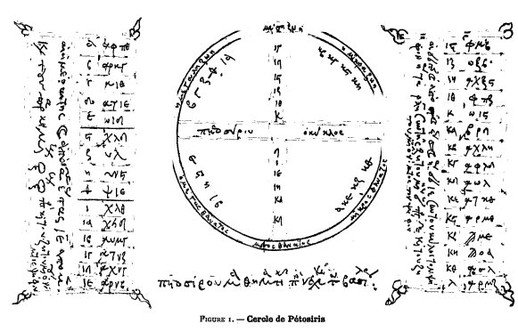
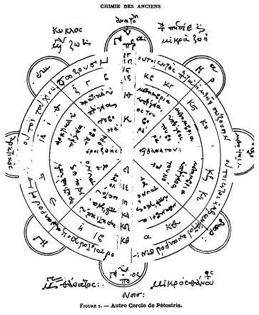

INTRODUCTION A L'ÉTUDE DE LA CHIMIE DES ANCIENS ET DU MOYEN AGE Marcellin Berthelot
SÉNATEUR, MEMBRE DE L'INSTITUT, PROFESSEUR AU COLLEGE DE FRANCE
AVEC PLANCHES, FIGURES EN PHOTOGRAVURE D'APRÈS LES MANUSCRITS, TABLES ET INDEX PARIS GEORGES STEINHEIL, ÉDITEUR 2, RUE CASIMIR-DELAVIGNE, 2 l889
partie I - II - III - IV - V - VI - VII -
revu le 23 mai 2004Plan : ...c. Fabrication de l'asèm - d. Recettes du Pseudo-Démocrite (Art de faire de l'or - Art de faire de l'asèm) ] - II. Relations entre métaux et planètes [le nombre sept] - III. La Sphère de Démocrite et les Médecins - IV. Signes et notations alchimiques...
c'est à peu près celle du cément royal, au moyen duquel on séparait l'or de l'argent et des autres métaux (p. 11). Employée comme ci-dessus, elle a pour effet de faire apparaître l'or pur à la surface de l'objet d'or, le centre demeurant allié avec les autres métaux. C'est donc un procédé de fraude (v. p. 16). Mais on pouvait aussi s'en servir pour lustrer l'or. Aujourd'hui encore les orfèvres emploient diverses recettes analogues, pour donner à l'or une belle teinte:« - Or mat, salpêtre, alun, sel ;
- Or fin, avec addition d'acide arsénieux ;
- Or rouge, par addition d'un sel de cuivre ;
- Or jaune, par addition de salpêtre, de sel ammoniac.
- Pour lustrer et polir. Tartre brut, 2 onces; soufre en poudre, 2 onces; sel marin, 4 onces ; faites bouillir dans parties égales d'eau et d'urine ; trempez-y l'or, ou l'ouvrage doré. » (Manuel Roret, t. II, p. 188; 1832).Le soufre et l'urine se retrouvent ici, dans le manuel Roret, comme chez les alchimistes égyptiens. Voici maintenant des procédés de dorure véritable. L'un d'eux (38) est remarquable, parce qu'il procède sans mercure, au moyen d'un alliage de plomb : il représente peut-être une pratique antérieure à la connaissance du mercure, dont il n'est pas question jusqu'au Ve siècle avant notre ère. En tout cas, c'est toujours un procédé pour tromper l'acheteur, comme le texte le dit expressément. Un autre procédé (57) est destiné à dorer l'argent, par application avec des feuilles d'or et du mercure. L'objet, dit l'auteur, peut subir l'épreuve de l'or régulier (la pierre de touche) : c'est donc un procédé de fraude. D'autres recettes donnent seulement l'apparence de l'or: on la communique au cuivre par l'emploi du cumin par exemple (28) ; avec des variantes (47) et (77). Rappelons ici les recettes pour écrire en couleur d'or avec l'aide du safran, du carthame et de la bile de veau ou de tortue (39), (63), (74). Pline explique également que l'on colore le bronze en or avec le fiel de taureau (H. N. XXVIII, 146). Une autre recette est destinée à dorer sans or un vase d'argent ou de cuivre, au moyen du natron jaune, substance mal connue (49) : c'était peut- être un sulfure, capable de teindre superficiellement les métaux (v. p. 39)1. Une recette pour dorer l'argent (51) repose sur l'emploi de la sandaraque (c'est-à-dire du réalgar), du cinabre et du misy (sulfates de cuivre et de fer basiques). Elle constate ainsi l'apparition des composés arsenicaux pour teindre en or. Mais ces composés semblent employés ici seulement par application, sans intervention de réactions chimiques, telles que celles qui font au contraire la base des méthodes de transmutation par l'arsenic chez les alchimistes. Une apparence de dorure superficielle (69) et (76) repose sur l'emploi du misy grillé, de l'alun et de la chélidoine2, avec addition d'urine. Ces procédés de teinture superficîelle sont devenus un procédé de transmutation dans le Pseudo-Démocrite (Physica et Mystica), qui s'exprime ainsi :
« Rendez le cinabre (Ce mot semble signifier ici le minium (oxyde de plomb), sens que l'on trouve dans Dioscoride. ) blanc au moyen de l'huile, ou du vinaigre, ou du miel, ou de la saumure, ou de l'alun; puis jaune, au moyen du misy, ou du sory, ou de la couperose, ou du soufre apyre, ou comme vous voudrez. Jetez le mélange sur de l'argent et vous obtiendrez de l'or, si vous avez teint en or; si c'est du cuivre, vous aurez de l'électrum : car la nature jouit de la nature. »3
Cette recette est reproduite avec plus de détails un peu plus loin dans le même auteur. Ailleurs le Pseudo-Démocrîte donne un procédé fondé sur l'emploi du safran et de la chélidoine, pour colorer la surface de l'argent ou du cuivre et la teindre en or : ce qui est conforme aux recettes pour écrire en lettres d'or exposées plus haut. La chélidoine apparaît aussi associée à l'orpiment, dans l'une des recettes du papyrus pour écrire en lettres d'or sur papier, sur parchemin, ou sur marbre (74). A la suite figure un procédé de dorure par vernissage, fondé sur l'emploi simultané des composés arsenicaux, de la bile et du mercure (75). Ce procédé rappelle à certains égards le vernis suivant, pour donner
une couleur d'or à un métal quelconque (Manuel Roret, t. II, p. 192; 1832):« Sangdragon, soufre et eau, faire bouillir, filtrer; on met cette eau dans un matras avec le métal qu'on veut colorer. On bouche, on fait bouillir, on distille. Le résidu est une couleur jaune, qui teint les métaux en couleur d'or. On peut encore opérer avec parties égales d'aloès, de salpêtre et de sulfate de cuivre. »
Les procédés suivants sont des procédés d'argenture, tous fondés sur une coloration apparente, opérée sans argent. Ainsi (42), sous le nom d'enduit de cuivre, on enseigne à blanchir le cuivre en le frottant avec du mercure : c'est encore aujourd'hui un procédé pour donner à la monnaie de cuivre l'apparence de l'argent et duper les gens inattentifs.
- De même un amalgame d'étain, destiné à blanchir le cuivre (27).
- De même le procédé pour colorer l'argent (81).
- La teinture en couleur d'asèm (80) et (67), intermédiaire entre l'or et l'argent, est répétée deux fois.
- Citons encore une recette pour blanchir le cuivre par l'arsenic (23)
Au lieu de teindre la surface des métaux, pour leur donner l'apparence de l'or ou de l'argent, les orfèvres égyptiens apprirent de bonne heure à les teindre à fond, c'est-à-dire en les modifiant dans toute leur masse. Les procédés employés par eux consistaient à préparer des alliages d'or et d'argent conservant l'apparence du métal ; c'est ce qu'ils appelaient la diplosis, l'art de doubler le poids de l'or et de l'argent (V. plus haut p. 56); expression qui a passé aux alchimistes53, en même temps que la prétention d'obtenir ainsi des métaux, non simplement mélangés, mais transformés à fond. Le mot actuel de doublé se rapporte au même ordre d'idées, mais avec un sens tout différent, puisqu'il s'agit aujourd'hui de deux lames métalliques superposées. Chez les anciens la signification était plus extensive. En effet, le mot diplosis impliquait autrefois, tantôt la simple augmentation de poids du métal précieux, additionné d'un métal de moindre valeur qui n'en changeait pas l'apparence, (16) et (17), (56), (87) et (88); tantôt la fabrication de toutes pièces de l'or et de l'argent, par la transmutation de nature du métal surajouté ; tous les métaux étant au fond identiques, conformément aux théories platoniciennes sur la matière première4. L'agent même de la transformation est une portion de l'alliage antérieur, jouant le rôle de ferment. Toutes ces préparations sont aussi claires et positives, sauf l'incertitude sur le sens de quelques mots, que nos recettes actuelles. Il n'en est que plus surprenant de voir naître, au milieu de procédés techniques si précis, la chimère d'une transmutation véritable ; elle est corrélative d'ailleurs avec l'intention de falsifier les métaux. Le faussaire, à force de tromper le public, finissait par croire à la réalité de son œuvre ; il y croyait, aussi bien que la dupe qu'il s'était d'abord proposé de faire. En effet, la parenté de ces recettes avec celles des alchimistes peut être aujourd'hui complètement établie. J'ai déjà signalé l'identité de quelques recettes de dorure du papyrus avec les recettes de transmutation du Pseudo-Démocrite ; je poursuivrai cette démonstration tout à l'heure en parlant de l'asèm. Elle est frappante pour la diplosis de Moïse (Manuscrit 299 de Saint-Marc (M), f. 185, recto. ), recette aussi brève, aussi claire que celle des papyrus de Leide et tirée probablement des mêmes sources ; du moins si l'on en juge par le rôle de Moïse dans ces mêmes papyrus (ce volume, p. 16). Le procédé de Moïse, exposé en quelques lignes, est celui-ci :« Prendre du cuivre, de l'arsenic (orpiment), du soufre et du plomb (Ou bien du soufre natif; d'après le symbole du manuscrit.) ; on broie le mélange avec de l'huile de raifort; on le grille sur des charbons jusqu'à désulfuration ; on retire; on prend de ce cuivre brûlé i partie et 3 parties d'or ; on met dans un creuset; on chauffe ; et vous trouverez le tout changé en or, avec le secours de Dieu. »
C'est un alliage d'or à bas titre, analogue à ceux signalés plus haut. Les soudures d'argent des orfèvres de nos jours sont encore exécutées au moyen des composés arsenicaux. On lit par exemple dans le Manuel Roret, t. II, p. 186 (1832):
« 3 parties d'argent, 1 partie d'airain : fondez ; jetez-y un peu d'orpiment en poudre.
« Autre: argent fin, 1 once; airain mince, 1 once; arsenic, 1 once. On fond d'abord l'argent et l'airain et l'on y ajoute l'arsenic.
« Autre : argent, 4 onces ; airain, 3 onces ; arsenic, 2 gros.
« Autre : argent, 2 onces ; clinquant, 1 once; arsenic, 4 gros ; couler de suite ; bonne soudure. »
On remarquera que l'énoncé même de ces formules de nos jours affecte une forme analogue à celui des formules du papyrus (23 notamment) et des manuscrits. C'est d'ailleurs par des recettes analogues que l'on prépare aujourd'hui le tombac blanc ou cuivre blanc, et le faux argent des Anglais. En tous cas, le cuivre est teint dans le papyrus au moyen de l'arsenic, comme chez les alchimistes; le tout dans une intention avouée de falsification. La formule d'Eugenius, qui suit dans le manuscrit de Venise, est un peu plus complexe que celle de Moïse. Elle repose aussi sur l'emploi du cuivre brûlé, mêlé à l'or et fondu, auquel on ajoute de l'orpiment : ce composé traité par le vinaigre est exposé au soleil pendant deux jours, puis on le dessèche ; on l'ajoute à l'argent, ce qui le rend pareil à l'électrum ; le tout ajouté à l'or, par parties égales, consomme l'opération. C'est toujours le même genre d'alliages, que l'auteur prétend identifier finalement avec l'or pur.
Le nœud de la question est dans la fabrication de l'asèm. L'asèm (Origines de l'Alchimie, p. 215.) des Égyptiens désignait à l'origine l'électrum, alliage d'or et d'argent, qui se trouve dans la nature et qui se produit aisément dans les traitements des minerais. Son nom a été traduit chez les Grecs anciens par celui de ashmon, ashmoV, ou ashmh, qui était aussi celui de l'argent sans marque, c'est-à-dire sans titre, lequel est devenu chez les Grecs modernes le nom même de l'argent. De là une confusion extrême dans les textes. Mais à l'origine l'asèm égyptien avait un sens propre, comme le montrent, sans doute possible, les papyrus de Leide. D'après Lepsius, d'ailleurs, l'asèm était regardé comme un métal distinct, comparable à l'or et à l'argent ; il est figuré à côté d'eux sur les monuments égyptiens. Il a été placé de même sous le patronage d'une divinité planétaire, Jupiter, qui, plus tard, fut attribuée à l'étain, vers le Ve ou VIe siècle de notre ère, lorsque l'électrum disparut de la liste des métaux.
Cependant ce métal prétendu variait notablement dans ses propriétés, suivant les doses relatives d'or, d'argent et des autres corps simples, alliés dans sa constitution : mais alors la chose ne paraissait pas plus surprenante que la variation des propriétés de l'airain, nom qui comprenait à la fois et notre cuivre rouge, et les bronzes et les laitons d'aujourd'hui. Ce n'est pas tout : l'asèm jouissait d'une faculté étrange : suivant les traitements subis, il pouvait fournir de l'or pur, ou de l'argent pur, c'est-à-dire être changé en apparence en ces deux autres métaux. Enfin, et réciproquement, on pouvait le fabriquer artificiellement, en alliant l'or et l'argent entre eux, voire même sans or, et sans argent et en outre avec association d'autres métaux, tels que le cuivre, l'étain, le zinc, le plomb, l'arsenic, le mercure, qui en faisaient varier la couleur et les diverses propriétés : on va citer tout à l'heure de nombreux exemples de ce genre de fabrication (v. aussi p. 54 et 56, les formules des monnaies falsifiées). C'était donc à la fois un métal naturel et un métal factice. Il établissait la transition de l'or et de l'argent entre eux et avec les autres métaux et semblait fournir la preuve de la transmutation réciproque de toutes ces substances, métaux simples et alliages. On savait d'ailleurs en retirer dans un grand nombre de cas l'or et l'argent, au moins par une analyse qualitative, et l'on y réussissait même dans des circonstances, telles que le traitement du plomb argentifère, où il ne semblait pas qu'on eût introduit l'argent à l'avance dans les mélanges capable de fournir ce métal. Tels sont les faits et les apparences qui servaient de bases aux pratiques, aux conceptions et aux croyances des orfèvres des papyrus de Leide, comme à celles des alchimistes gréco-égyptiens de nos manuscrits. On voit par là que, étant donné l'état des connaissances d'alors, ces conceptions et ces croyances n'avaient pas le caractère chimérique qu'elles ont pris pour nous; maintenant que les métaux simples sont définitivement distingués, les uns par rapport aux autres, comme par rapporta leurs alliages. La seule chose surprenante, c'est la question de fait : je veux dire que les praticiens aient cru si longtemps à la réalité d'une transmutation complète, alors qu'ils fabriquaient uniquement des alliages ayant l'apparence de l'or et de l'argent, alliages dont nous possédons maintenant, grâce au papyrus de Leide, les formules précises. Or ces formules senties mêmes que celles des manuscrits alchimiques. En fait, c'étaient là des instruments de fraude et d'illusion vis-à-vis du public ignorant. Mais comment les gens du métier ont-ils pu croire si longtemps qu'ils pouvaient réellement, par des pratiques d'artisan, ou par des formules magiques, réussir à changer ces apparences en réalité ? Il y a là un état intellectuel qui nous confond5. Quoi qu'il en soit, il est intéressant de pousser la connaissance des faits jusqu'à son dernier degré, et c'est ce que je vais essayer de faire. Le nombre des recettes relatives à l'asèm s'élève à 28 ou 30; c'est plus du quart du nombre total des articles du papyrus. Elles comprennent des procédés pour la fabrique de toutes pièces ; des procédés pour faire l'asèm noir, correspondant à ce que nous appelons l'argent oxydé ; des procédés pour teindre en asèm; pour faire des lettres de cette couleur, pour essayer l'asèm ; enfin des procédés pour doubler et multiplier la dose de l'asèm, pour le diluer, etc. : ce qui répond à la diplosîs de l'or, signalée plus haut (p. 56 et 60).
Entrons dans quelques détails, en commençant par les procédés de fabrication, qui mettent en pleine évidence le caractère réel de l'asèm. On trouve désignés sous ce nom, indépendamment de l'asèm naturel ou electrum, alliage d'or et d'argent figuré sur les monuments égyptiens :- 1° Un alliage d'étain et d'argent (3). C'est un procédé de diplosîs de l'argent.
- 2° Un amalgame d'étain, (5) et (86). Ici il s'agit uniquement de simuler l'argent. Dans une autre recette (37), l'étain affiné est simplement additionné d'un peu de mercure : ce qui montre que la dose de ce dernier variait.
- 3° L'étain affiné a été parfois identifié à l'asèm (v. p. 55), comme le montre la recette suivante, tirée du manuscrit 299 de Saint-Marc (M, fol. 106, recto);
« Prenez de l'étain affiné, fondez-le et, après cinq fusions, jetez du bitume à sa surface dans le creuset ; et chaque fois que vous le refondrez, coulez-le dans du sel ordinaire. Jusqu'à ce qu'il devienne un asèm parfait et abondant. »
C'est la formule (3) du papyrus, dans lequel elle précède la fabrication d'un alliage d'étain et d'argent. En tous cas, elle montre la similitude parfaite des recettes du papyrus et de celles du manuscrit de Saint-Marc.
- 4° Le nom de l'asèm paraît avoir été aussi appliqué à un alliage de plomb et d'argent, obtenu dans la fusion des minerais de plomb ; ainsi que l'établit le texte suivant (Le titre est : Sur la fabrication de l'asèm ; tandis que le signe employé dans le courant du texte est celui de l'argent. (Texte grec ci-après, I, xvi.) ), tiré du manuscrit de Saint-Marc (fol. 106, recto) :
« Prenez du plomb fusible, tiré des minerais lavés. Le plomb fusible est très compact. On le fond à plusieurs reprises, jusqu'à ce qu'il devienne asèm. Après avoir obtenu l'asèm, si vous voulez le purifier, jetez dans le creuset du verre de Cléopâtre et vous aurez de l'asèm pur; car le plomb fusible fournit beaucoup d'asèm. Chauffez le creuset sur un feu modéré et pas trop fort. »
Et un peu plus bas :
« On tire l'asèm du plomb purifié, comme il est écrit sur la stèle d'en haut (II s'agit évidemment de la recette précédente, inscrite probablement dans le temple sur une stèle ou colonne. ). Il faut savoir que cent livres de plomb ordinaire fournissent dix livres d'asèm. »
Dans les autres recettes, le cuivre intervient toujours; on rapprochait par là l'apparence et les propriétés de l'alliage de celles de l'or. L'asèm formait dès lors, aussi bien que l'électrum naturel, la transition entre l'or et l'argent. Toutefois, dans aucune des recettes, sauf la dernière (90), l'or n'est ajouté; ce qui montre bien l'intention d'imitation, ou plutôt de fraude.
- 5° Un alliage d'étain et de cuivre, sorte de bronze où l'étain dominait (30) ; ou bien il était pris à parties égales (29) et (14).
-6° Un alliage analogue, avec addition d'asèm antérieur (8) et (40). L'intention de fraude est ici très explicitement avouée. Dans cette formule, il n'est pas question des fondants et des tours de main pour affiner l'alliage, mais ils sont décrits en détail dans une autre recette (19), par laquelle on augmente la proportion de cuivre dans l'asèm déjà préparé : ce qui devait rapprocher le bronze obtenu de la couleur de l'or. De même (83), dans une recette où l'on décrit les précautions pour éviter l'oxydation.
- 7° Un alliage d'argent, d'étain et de cuivre (41). Une recette analogue, un peu plus détaillée et avec moitié moins d'étain, se termine par ces mots :
« Employez-le comme de l'asèm, préférable au véritable (59). »
- 8° Un amalgame de cuivre et d'étain (9) et (29).
- 9° Un amalgame de cuivre, d'étain et d'asèm (13) et (18). C'est une variante de la formule précédente.
Ces recettes paraissent se rapporter à ces prescriptions fondamentales du Pseudo- Démocrite :
« Fixe le mercure avec le corps (ou métal) de la magnésie. » 6
La magnésie était, à proprement parler, tantôt la pierre d'aimant, avec addition de divers métaux et oxydes métalliques, tantôt un sulfure métallique contenant du fer, du cuivre, du plomb, etc.
- 10° Un alliage de plomb, de cuivre, de zinc et d'étain (11) ; avec ces mots à la fin :
« On s'en sert comme de l'asèm naturel. »
On voit paraître ici l'idée d'imiter par l'art le métal naturel, par analogie avec la reproduction artificielle des pierres précieuses7.
- 11° Un alliage de plomb, de cuivre et d'asèm (84), désigné sous le nom d'asèm égyptien, d'après la recette de Phiménas le Saïte, personnage qui est le même que le Pamménès des alchimistes. En effet, il est expressément cité par le Pseudo-Démocrite, comme artiste en Chrysopée, au début d'une série, de recettes pour la fabrication de l'asèm (p. 24). Cet ordre d'alliages rappelle le métal anglais de nos jours, formé de 80 parties de cuivre; 4,3 de plomb; 10,1 d'étain; 5,6 de zinc.
- De même l'alliage indien : 16 parties de cuivre; 4 parties de plomb; 2 parties d'étain ; 16 parties de zinc ; ou bien le métal du prince Robert : 4 parties de cuivre et 2 de zinc;
- Les alliages de cuivre et de zinc (100 cuivre, 8 à 14 zinc) ;
- Les alliages de cuivre (100 parties), de zinc et d'étain (de 3 à 7 parties de chacun) ;
- L'argentan, le packfong, le cuivre blanc des Chinois, le maillechort; alliages de cuivre (de 3 à 5 parties) avec le zinc et le nickel (parties égales, formant la moitié ou les deux tiers du poids du cuivre), additionnés d'un peu de plomb;
- Et un grand nombre d'alliages complexes et du même ordre, cuivres, bronzes et laitons blancs et faunes encore usités dans l'industrie : la variété en est infinie.- 12° Un alliage d'asèm et d'orichalque (laiton) arsenical, décrit à la suite du précédent (85). Cette recette compliquée, où l'arsenic intervient, rappelle tout à fait celles des alchimistes. On lit, par exemple, dans le Pseudo-Démocrite (Physica et Mystica, Texte grec, 1,7) :
« Fabrication de l'or jaune.— Prenez du claudianon (Alliage de plomb et d'étain contenant du zinc et du cuivre.), rendez-le brillant et traitez-le suivant l'usage, jusqu'à ce qu'il devienne jaune. Jaunissons donc: Je ne dis pas avec la pierre, mais avec sa portion utile. Vous jaunirez avec l'alun décomposé (Dans le langage des alchimistes grecs, ce mot s'applique non seulement à notre alun plus ou moins pur, mais à l'acide arsénîeux, provenant du grillage des sulfures : cette signification est donnée dans les textes d'une façon très explicite.), avec le soufre, ou l'arsenic (sulfuré), ou la sandaraque (réalgar), ou le titanos (calcaire), ou à votre idée : si vous y ajoutez de l'argent, vous aurez de l'or; si vous mettez de l'or, vous aurez du corail d'or (Quintessence de l'or. Ce mot est parfois synonyme de coquille d'or, dénomination conservée dans le langage des orfèvres par le mot or en coquilles, c'est-à-dire or en poudre, dont le sens actuel n'est peut-être pas le même que celui des anciens.) ; car la nature victorieuse domine la nature. »8
Le procédé semble le même ; mais il est moins clair chez l'alchimiste et il est devenu une méthode de transmutation. Une recette analogue se retrouve un peu plus loin dans le même auteur. Voici encore un résumé de la recette d'Olympîodore, auteur alchimiste du Ve siècle, laquelle est très claire.
« Première teinture teignant le cuivre en blanc. — L'arsenic est une espèce de soufre qui se volatilise au feu. Prenez de l'arsenic doré, 14 onces ; porphyrisez, faites tremper dans du vinaigre deux ou trois jours et faites sécher à l'air, mêlez avec 5 onces de sel de Cappadoce (sel gemme) ; l'emploi de ce sel a été proposé par Africanus. On place au-dessus du vaisseau qui contient le mélange une tasse ou vase de verre et au-dessus une autre tasse, assujettie de tous côtés, pour que l'arsenic brûlé ne se dissipe pas (Cette description répond à celle de l'aludel.). Faites brûler à plusieurs reprises, jusqu'à ce qu'il soit devenu blanc : on obtient ainsi de l'alun blanc et compact (Ce nom s'appliquait donc à l'acide arsénieux. ). Ensuite on fait fondre du cuivre avec de la cendre de chêne de Nicée (Flux blanc.),9 puis vous prenez de la fleur de natron (Fondant), vous en jetez au fond du creuset 2 ou 3 parties pour ramollir. Ensuite vous projetez la poudre sèche (arsenic) avec une cuiller de fer, 1 once pour 2 onces de cuivre; puis vous ajoutez dans le creuset un peu d'argent, pour rendre la teinture uniforme; vous projetez encore un peu de sel. Vous aurez ainsi un très bel asèm. »
On voit que les recettes des premiers alchimistes ne sont nullement chimériques, mais pareilles à celles du papyrus et même aux recettes des orfèvres et métallurgistes de nos jours. Venons aux procédés de diplosis proprement dite, destinés à augmenter le poids de l'asém, envisagé comme un métal défini, procédés analogues aux diplosis de l'or et de l'argent décrites plus haut et donnant des alliages plus ou moins riches en cuivre (6), (10) et (90). Dans le dernier procédé, il semble qu'il s'agisse d'accroître le poids de l'asèm et d'en modifier la couleur. On le ramollit par amalgamation, afin d'y pouvoir incorporer de l'or, de l'argent, du soufre, de l'arsenic et du cuivre. Les derniers métaux sont tirés de leurs sulfures, dissous ou désagrégés par le polysulfure de calcium, qui forme l'eau de soufre : le tout, avec le concours des grillages et d'une nouvelle amalgamation finale. C'est là, tout à fait un procédé d'alchimiste transmutateur. Une mention spéciale est due à la substance appelée udwr qeion : ce qui veut dire eau de soufre10, ou eau divine, substance qui a un rôle énorme chez les alchimistes, lesquels jouent continuellement sur le double sens de ce mot. Cette liqueur est désignée dans le lexique alchimique sous le nom de bile de serpent; dénomination qui est attribuée à Pétésis11, seul auteur cité dans ce lexique, lequel figure aussi dans Dioscoride, et qui doit être rapproché de Phiménas ou Pamménès, désigné à la fois dans le papyrus et dans le Pseudo-Démocrite. Ces noms représentent deux personnages réels, deux de ces prophètes ou prêtres chimistes qui ont fondé notre science. L'eau de soufre apparaît pour la première fois dans le papyrus X (89). La recette est très claire : elle désigne la préparation d'un polysulfure de calcium. Dans la recette consécutive (90), qui est fort compliquée, on met en œuvre la liqueur ci-dessus. Cette liqueur préparée avec du soufre natif (udwr qeiou aqiktou) se trouve décrite dans divers passages des alchimistes, par exemple dans le petit résumé de Zosime intitulé : gvhsia grajh, écrit authentique. Rappelons ici que les descriptions de Zosime se rapportent en divers endroits à des liqueurs chargées d'acide sulfhydrique (Sur la même eau divine ; on y lit le passage suivant : découvrant l'alambic, tu te boucheras le nez à cause de l'odeur, etc.)12. Une semblable eau de soufre possède une activité remarquable, surtout vis- à-vis des métaux, activité qui a dû frapper vivement ses inventeurs. Non seulement elle donne des précipités ou produits colorés en noir, en jaune, en rouge, etc., avec les sels et oxydes métalliques : mais les polysulfures alcalins exercent une action dissolvante sur la plupart des sulfures métalliques13 ; ils colorent directement la surface des métaux de teintes spéciales ; enfin ils peuvent même, par voie sèche à la vérité, dissoudre l'or. Dans ces procédés de diplosis et dans la plupart des fabrications d'asèm, l'auteur ajoute toujours au mélange une certaine dose d'asèm préexistant, pour faciliter l'opération. Il y a là une idée analogue à celle d'un ferment14 et qui est exposée d'une façon plus explicite dans deux articles spéciaux (7) et (60). Quelques mots maintenant sur l'asèm noir, préparation analogue à notre argent oxydé (36). C'est un alliage noirci par des sulfures métalliques. Pline dit de même [Hist. nat., XXXIII, 46) :
« L'Egypte colore l'argent, pour voir dans les vases son Anubis ; elle peint l'argent, au lieu de le ciseler. Cette matière a passé de là aux statues triomphales ; et, chose étrange, elle augmente de prix en voilant son éclat. Voici comment on opère. On mêle avec un tiers d'argent deux parties de cuivre de Chypre très fin, nommé coronaire, et autant de soufre vif que d'argent. On combine le tout par fusion, dans un vase de terre luté avec de l'argile... On noircit aussi avec un jaune d'œuf durci ; mais cette dernière teinte est enleve'e par l'emploi de la craie et du vinaigre. »
Ainsi Pline opère avec de l'argent pur, tandis que le papyrus met en œuvre un alliage plombifère.
IV. — Recettes du Pseudo-Démocrîte.
Pour achever de caractériser ces colorations de métaux en or et en argent, ainsi que toute l'industrie des orfèvres et métallurgistes égyptiens qui a donné naissance à l'Alchimie, il semble utile de donner les recettes des premiers alchimistes eux-mêmes. J'en ai déjà reproduit quelques-unes (p. 59, 6l, 62, 64, 65, 67). Les plus vieilles de ces recettes sont exposées dans le Traité du Pseudo-Démocrite, intitulé Physîca et Mystica; je les ai étudiées et j'ai réussi à en tirer un sens positif, à peu près aussi clair que pour les procédés décris par Pline ou Dioscoride. Or leur comparaison fournit les résultats les plus dignes d'intérêt. Après un fragment technique sur la teinture en pourpre et un récit d'évocation, ce Traité poursuit par deux Chapitres, l'un sur la Chrysopée ou art de faire de l'or ; l'autre sur la fabrication de l'asèm, assimilée à l'art de faire de l'argent. Ces deux Chapitres sont en réalité des collections de recettes ayant le même caractère pratique, c'est-à-dire relatives tant à la préparation de métaux teints superficiellement, qu'à celle d'or et d'alliages d'argent. Les recettes mêmes sont comparables de tous points à celles du papyrus deLeide, à cela près que chacune d'elles se termine par les refrains mystiques : La nature triomphe de la nature ; la nature jouit de la nature ; la nature domine la nature, etc. Cependant il n'y a ni magie, ni mystère dans le corps même des recettes. Donnons-en le résumé en quelques lignes.
ART DE FAIRE DE L'OR. — Première recette. — On éteint le mercure, en l'alliant avec un autre métal ; ou bien en l'unissant au soufre, ou au sulfure d'arsenic ; ou. bien en l'associant avec certaines matières terreuses. On étend cette pâte sur du cuivre pour le blanchir. En ajoutant de l'électrum ou de l'or en poudre, on obtient un métal coloré en or. Dans une variante, on blanchit le cuivre au moyen des composés arsenicaux, ou du cinabre décomposé. Il s'agit donc, en somme, d'un procédé d'argenture apparente du cuivre, précédant une dorure superficielle.
Deuxième recette. — On traite le sulfure d'argent naturel par la litharge de plomb, ou par l'antimoine, de façon à obtenir un alliage; et l'on colore en jaune par une matière non définie.
Troisième récette. — On grille la pyrite cuivreuse, on la fait digérer avec des solutions de sel marin, et l'on prépare un alliage avec de l'argent ou de l'or. Le claudianon (alliage de cuivre, d'étain et de plomb avec le zinc) est jauni par le soufre, ou l'arsenic, puis allié à l'argent ou à l'or.
Quatrième recette.— Le cinabre, décomposé par divers traitements, teint l'argent en or, le cuivre en électrum.
Cinquième recette. — On prépare un vernis jaune d'or avec la cadmie, ou la bile de veau, ou la térébenthine, ou l'huile de ricin, ou le jaune d'œuf (v. p. 56, 58, 59).
Sixième recette. — On teint l'argent en or, par une sulfuration superficielle, obtenue au moyen de certaines pyrites, ou de l'antimoine oxydé, joints à l'eau de soufre (polysulfure de calcium) et au soufre même.
Septième recette. — On prépare d'abord un alliage de cuivre et de plomb (molybdochalque) et on le jaunit, de façon à obtenir un métal couleur d'or.
Huitième recette. — On teint le cuivre et l'argent à la surface en jaune, au moyen de la couperose verte altérée. Puis vient une recette d'affinage de l'or, rappelant le cément royal.
Neuvième recette. — Même recette appliquée à la cémentation superficielle, qui donne aux parties extérieures du métal les caractères de l'or. Vient après une petite déclamation de l'auteur sur les phénomènes chimiques et sur la nature de sa science ; puis trois recettes de vernis, pour teindre en or par digestion avec certains mélanges de substances végétales, safran, chélidoine, carthame, etc., recettes qui rappellent le procédé tiré du Manuel Roret, que j'ai exposé plus haut (p. 60). L'auteur dit finalement :
« Cette matière de la Chrysopée accomplie par des opérations naturelles est celle de Pamménès, qu'il enseignait aux prêtres en Egypte. »
ART DE FAIRE DE L'ASEM. — II expose ensuite la fabrication de l'asèm, ou Argyropée (c'est-à-dire l'art de faire de l'argent).
Première recette — On blanchit le cuivre par les composés volatils de l'arsenic; cette action opérée par sublimation étant assimilée à celle du mercure (De là, l'idée des deux mercures, l'un tiré du cinabre, l'autre de l'arsenic, qui se trouve souvent chez les alchimistes.).15
Deuxième recette. — Le mercure sublimé est éteint avec de l'étain, du soufre et divers autres ingrédients; et l'on s'en sert pour blanchir les métaux.
Troisième recette. — Analogue à la précédente et appliquée à un alliage de cuivre, d'orichalque et d'étain.
Quatrième recette. — Sulfure d'arsenic et soufre employés pour blanchir et modifier les métaux.
Cinquième recette. — Préparation d'un alliage blanc à base de plomb.
Sixième recette. — C'est un simple vernis superficiel pour donner au cuivre, au plomb, au fer, l'apparence de l'argent; ce vernis étant fisé par décoction et enduits sans l'action du feu (v. p. 52).
Septième recette. — Elle représente une teinture par amalgamation, et la 8e recette un simple vernis.
On voit que toutes ces recettes du Pseudo-Démocriîe et d'Olympiodore, aussi bien que celles du papyrus de Leide, sont réelles, positives, sans mélange de chimère. Plus tard sont venus les philosophes et les commentateurs, étrangers à la pratique et animés d'espérances mystiques, qui ont jeté une grande confusion dans la question. Mais le point de départ est beaucoup plus clair, comme le montrent les textes que je viens analyser. J'ai cru utile de développer cette étude de l'asèm, parce qu'elle est nouvelle et parce qu'elle jette beaucoup de lumière sur les idées des Egyptiens du IIIe siècle de notre ère, relativement à la constitution des métaux16. On voit en effet qu'il n'existe pas moins de douze ou treize alliages distincts, désignés sous ce même nom d'asèm, alliages renfermant de l'or, de l'argent, du cuivre, de l'étain, du plomb, du zinc, de l'arsenic17. Leur caractéristique commune était de former la transition entre l'or et l'argent, dans la fabrication des objets d'orfèvrerie. Rien n'était plus propice qu'une semblable confusîon pour donner des facilités à la fraude : aussi a-t-elle dû être entretenue soigneusement par les opérateurs. Mais, par un retour facile à concevoir, elle a passé des produits traités dans les opérations jusqu'à l'esprit des opérateurs eux-mêmes. Les théories des écoles philosophiques sur la matière première, identique dans tous les corps, mais recevant sa forme actuelle de l'adjonction des qualités fondamentales exprimées par les quatre éléments, ont encouragé et excité cette confusion. C'est ainsi que les ouvriers habitués à composer des alliages simulant l'or et l'argent, parfois avec une perfection telle qu'eux-mêmes s'y trompaient, ont fini par croire à la possibilité de fabriquer effectivement ces métaux de toutes pièces, à l'aide de certaines combinaisons d'alliages, et de certains tours de main, complétés par l'aide des puissances surnaturelles, maîtresses souveraines de toutes les transformations18.
II - RELATIONS ENTRE LES MÉTAUX ET LES PLANÈTES
LE NOMBRE SEPT (Cet article a été publié dans mon ouvrage intitulé : Science et Philosophie. Toutefois j'ai cru devoir le reproduire ici avec certains développements nouveaux, parce qu'il est indispensable pour l'intelligence des textes et des notations alchimiques ).
« Le monde est un animal unique, dont toutes les parties, quelle qu'en soit la distance, sont liées entre elles d'une manière nécessaire. »
Cette phrase de Jamblique le Néoplatonicien19 ne serait pas désavouée par les astronomes et par les physiciens modernes; car elle exprime l'unité des lois de la nature et la connexion générale de l'Univers. La première perception de cette unité remonte au jour où les hommes reconnurent la régularité fatale des révolutions des astres : ils cherchèrent aussitôt à en étendre les conséquences à tous les phénomènes matériels et même moraux, par une généralisation mystique, qui surprend le philosophe, mais qu'il importe pourtant de connaître, si l'on veut comprendre le développement historique de l'esprit humatn. C'est la chaîne d'or qui reliait tous les êtres, dans le langage des auteurs du moyen âge. Ainsi l'influence des astres parut s'étendre à toute chose, à la génération des métaux, des minéraux20 et des êtres vivants, aussi bien qu'à l'évolution des peuples et des individus21. Il est certain que le soleil règle, par le flux de sa lumière et de sa chaleur, les saisons de l'année et le développement de la vie végétale; il est la source principale des énergies actuelles ou latentes à la surface de la terre. On attribuait autrefois le même rôle, quoique dans des ordres plus limités, aux divers astres, moins puissants que le soleil, mais dont la marché est assujettie à des lois aussi régulières. Tous les documents historiques prouvent que c'est à Babylone et en Chaldée22 que ces imaginations prirent naissance ; elles ont joué un rôle important dans le développement de l'astronomie, étroitement liée avec l'astrologie dont elle semble sortie. L'alchimie s'y rattache également, au moins par l'assimilation établie entre les métaux et les planètes, assimilation tirée de leur éclat, de leur couleur et de leur nombre même. Attachons-nous d'abord à ce dernier : c'est le nombre sept, chiffre sacré que l'on retrouve partout, dans les jours de la semaine, dans l'énumération des planètes et des zones célestes, dans celle des métaux, des couleurs, des cordes de la lyre et des tons musicaux, des voyelles de l'alphabet grec, aussi bien que dans le chiffre des étoiles de la grande ourse, des sages de la Grèce, des portes de Thèbes et des chefs qui l'assiègent, d'après Eschyle23. L'origine de ce nombre paraît être astronomique et répondre aux phases de la lune, c'est-à-dire au nombre des jours qui représentent le quart de la révolution de cet astre24. Ce n'est pas là une opinion a priori. On la trouve en effet signalée dans Aulu-Gelle25, qui l'a attribuée à Aristide de Samos (Noctes Attica, III, 10. Lunae curriculum confici integris quatuor septenis diebus..auctorem que hujus opînionis Aristidem esse Samium). Dans le papyrus W de Leide, il est aussi question (p. 17) des 28 lumières de la lune. L'usage de la semaine était ancien en Egypte et en Chaldée, comme en témoignent divers monuments et le récit de la création dans la Genèse. Mais il n'existait pas dans la Grèce classique et il ne devint courant à Rome qu'au temps des Antonins (Dion Cassius, Histoire Romaine, XXXVII, 18.). C'est seulement à l'époque de Constantin et après le triomphe du Christianisme qu'il fut reconnu comme mesure légale de la vie civile : depuis il est devenu universel chez les peuples européens. Le hasard a fait que le nombre des astres errants (planètes), visibles à l'œîl nu, qui circulent ou semblent circuler dans le ciel autour de la terre s'élève précisément à sept : ce sont le Soleil, la Lune, Mars, Mercure, Jupiter, Vénus et Saturne. A chaque jour de la semaine, un astre fut attribué en Orient : les noms même des jours, tels que nous les prononçons maintenant, continuent à traduire, à notre insu, cette consécration babylonienne. A côté des sept Dieux des sphères ignées, les Chaldéens invoquaient les sept Dieux du ciel, les sept Dieux de la terre, les sept Dieux malfaisants, etc. D'après François Lenormant les inscriptions cunéiformes mentionnent les sept pierres noires, adorées dans le principal temple d'Ouroukh en Chaldée, bêtyles personnifiant les sept planètes. C'est au même rapprochement que se rapporte, sans doute, un passage du roman de Philostrate sur la vie d'Apollonius de Tyane (III, 41)26, dans lequel îl est question de sept anneaux, donnés à ce philosophe par le brahmane larchas. La connaissance des divinités planétaires de la semaine ne se répandît dans le monde gréco-romain qu'à partir du Ier siècle de notre ère (Lunae cursum stellarumque septem imagines. PETRONE, Satyricon, 30). On a trouvé à Pompéi une peinture représentant les sept divinités planétaires. De même divers autels sur les bords du Rhin. Une médaille à l'effigie d'Antonin le Pieux, frappée la 8ème année de son règne, représente les bustes des sept Dieux planétaires avec les signes du zodiaque, et au centre le buste de Sérapis (DE WITTE, Gazette archéologique, 1877 et 1879.). Une autre coïncidence, aussi fortuite que celle du nombre des planètes avec le quart de la révolution lunaire, celle du nombre des voyelles de l'alphabet grec, nombre égal à sept, a multiplié ces rapprochements mystiques, surtout au temps des gnostîques : les pierres gravées de la Bibliothèque nationale de Paris et les papyrus de Leide en fournissent une multitude d'exemples. Ce n'est pas tout : les Grecs, avec leur esprit ingénieux, ne tardèrent pas à imaginer entre les planètes et les phénomènes physiques des relations pseudo-scientifiques, dont quelques-unes, telles que le nombre des tons musicaux et des couleurs se sont conservées27. C'est ainsi que l'école de Pythagore établit un rapport géométrique des tons et diapasons musicaux avec le nombre et les distances mêmes des planètes (PLINE, H. N., II, 20. — Th. H. Martin, Timée de Platon, t. II, p. 38. ). Le nombre des couleurs fut pareillement fixé à sept. Cette classification arbitraire a été consacrée par Newton28 et elle est venue jusqu'aux physiciens de notre temps. Elle remonte à une haute antiquité. Hérodote rapporte (Clio, 98) que la ville d'Ecbatane avait sept enceintes, peintes chacune d'une couleur différente : la dernière était dorée; celle qui la précédait, argentée. C'est, je crois, la plus vieille mention qui établisse la relation du nombre sept avec les couleurs et les métaux. La ville fabuleuse des Atlantes, dans le roman de Platon29, est pareillement entourée par des murs concentriques, dont les derniers sont revêtus d'or et d'argent; mais on n'y retrouve pas le mystique nombre sept. Entre les métaux et les planètes, le rapprochement résulte, non seulement de leur nombre, mais surtout de leur couleur. Les astres se manifestent à la vue avec des colorations sensiblement distinctes : suus cuique color est, dit Pline (H. N. II, 16). La nature diverse de ces couleurs a fortifié le rapprochement des planètes et des métaux. C'est ainsi que l'on conçoit aisément l'assimilation de l'or, le plus éclatant et le roi des métaux, avec la lumière jaune du soleil, le dominateur du Ciel. La plus ancienne indication que l'on possède à cet égard se trouve dans Pindare. La cinquième ode des Isthméennes débute par ces mots:
« Mère du Soleil, Thia, connue sous beaucoup de noms, c'est à toi que les hommes doivent la puissance prépondérante de l'or ».
Mater Aliou, poluwnume qeia,
seo g exati kai megasqenh nomisan,
cruson anqrwpoi periwsion allwnDans Hésiode, Thia est une divinité, mère du soleil et de la lune, c'est-à-dire génératrice des principes de la lumière (Théogonie, 371, 374). Un vieux scoliaste commente ces vers en disant:
« de Thia et d'Hypérion vient le soleil, et du soleil, l'or. A chaque astre une matière est assignée. Au Soleil, l'or; à la Lune, l'argent; à Mars, le fer; à Saturne, le plomb; à Jupiter, l'électrum; à Hermès, l'étain; à Vénus, le cuivre (PINDARE, édition de Bœckh, t. II, p. 540, 1819) ».
Cette scolie remonte à l'époque Alexandrine. Elle reposait à l'origine sur des assimilations toutes naturelles. En effet, si la couleur jaune et brillante du soleil rappelle celle de l'or
................................... orbem
Per duodena régit mundi sol aureus astra ;
(VIRGILE, Géorgiques, I, 432. )la blanche et douce lumière de la lune a été de tout temps assimilée à la teinte de l'argent. La lumière rougeâtre de la planète Mars (igneus, d'après Pline; puroeiV d'après les alchimistes) a rappelé de bonne heure l'éclat du sang et celui du fer, consacrés à la divinité du même nom. C'est ainsi que Didyme, dans son commentaire sur l'Iliade (1. V), commentaire un peu antérieur à l'ère chrétienne, parle de Mars, appelé l'astre du fer. L'éclat bleuâtre de Vénus, l'étoile du soir et du matin, rappelle pareillement la teinte des sels de cuivre, métal dont le nom est tiré de celui de l'île de Chypre, consacrée à la déesse Cypris, l'un des noms grecs de Vénus. De là le rapprochement fait par la plupart des auteurs. Entre la teinte blanche et sombre du plomb et celle de la planète Saturne, la parenté est plus étroite encore et elle est constamment invoquée depuis l'époque Alexandrine. Les couleurs et les métaux assignés à Mercure l'étincelant (stilbwn, radians, d'après Pline; apparence due à son voisinage du soleil)30, et à Jupiter le resplendissant (Jaeqwn)31, ont varié davantage, comme je le dirai tout à l'heure. Toutes ces attributions sont liées étroitement à l'histoire de l'astrologie et de l'alchimie. En effet, dans l'esprit des auteurs de l'époque Alexandrine ce ne sont pas là de simples rapprochements ; mais il s'agit de la génération même des métaux, supposés produits sous l'influence des astres dans le sein de la terre32. Proclus, philosophe néoplatonicien de Ve siècle de notre ère, dans son commentaire sur le Timée de Platon, expose que
« l'or naturel et l'argent et chacun des métaux, comme des autres substances, sont engendrés dans la terre sous l'influence des divinités célestes et de leurs effluves. Le Soleil produit l'or; la Lune, l'argent; Saturne, le plomb, et Mars, le fer » (p. 14 C). 33
L'expression définitive de ces doctrines astrologico-chimiques et médicales se trouve dans l'auteur arabe Dimeschqî, cité par Chwolson (sur les Sabéens, t. II, p. 380, 396, 411, 544). D'après cet écrivain, les sept métaux sont en relation avec les sept astres brillants, par leur couleur, leur nature et leur propriétés : ils concourent à en former la substance. Notre auteur expose que chez les Sabéens, héritiers des anciens Chaldéens, les sept planètes étaient adorées comme divinités; chacune avait son temple, et, dans le temple, sa statue faite avec le métal qui lui était dédié. Ainsi le Soleil avait une statue d'or; la Lune, une statue d'argent; Mars, une statue de fer; Vénus, une statue de cuivre; Jupiter, une statue d'étain; Saturne, une statue de plomb. Quant à la planète Mercure, sa statue était faite avec un assemblage de tous les métaux34, et dans le creux on versait une grande quantité de mercure. Ce sont là des contes arabes, qui rappellent les théories alchimiques sur les métaux et sur le mercure, regardé comme leur matière première. Mais ces contes reposent sur de vieilles traditions défigurées, relatives à l'adoration des planètes, à Babylone et en Chaldée, et à leurs relations avec les métaux. Il existe, en effet, une liste analogue dès le second siècle de notre ère. C'est un passage de Celse, cité par Origène [Opera, t. I, p. 646; Contra Celsum, livre VI, 22; édition de Paris, 1733). Celse expose la doctrine des Perses et les mystères mithriaques, et il nous apprend que ces mystères étaient exprimés par un certain symbole, représentant les révolutions célestes et le passage des âmes à travers les astres. C'était un escalier, muni de 7 portes élevées, avec une 8ème au sommet.
- La première porte est de plomb ; elle est assignée à Saturne, la lenteur de cet astre étant exprimée par la pesanteur du métal (Saturni sidus gelidae ac rigentis esse naturae PLINE, H. N., II, 6).
- La seconde porte est d'étain ; elle est assignée à Vénus, dont la lumière rappelle l'éclat et la mollesse de ce corps.
- La troisième porte est d'airain, assignée à Jupiter, à cause de la résistance du métal.
- La quatrième porte est de fer, assignée à Hermès, parce que ce métal est utile au commerce, et se prête à toute espèce de travail.
- La cinquième porte, assignée à Mars, est formée par un alliage de cuivre monétaire, inégal et mélangé.
- La sixième porte est d'argent, consacrée à la Lune;
- La septième porte est d'or, consacrée au soleil ; ces deux métaux répondent aux couleurs des deux astres.35Les attributions des métaux aux planètes ne sont pas ici tout à fait les mêmes que chez les Néoplatoniciens et les alchimistes. Elles semblent répondre à une tradition un peu différente et dont on trouve ailleurs d'autres indices. En effet, d'après Lobeck (Agiaophamus, p. 936, 1829), dans certaines listes astrologiques, Jupiter est de même assigné à l'airain, et Mars au cuivre. On rencontre la trace d'une diversité plus profonde et plus ancienne encore, dans une vieille liste alchimique, reproduite dans plusieurs manuscrits alchimiques ou astrologiques et où le signe de chaque planète est suivi du nom du métal et des corps dérivés ou congénères, mis sous le patronage de la planète. Cette liste existe également dans le Ms. 2419 de notre Bibliothèque Nationale (fol. 46 verso), où elle fait partie d'un traité astrologique d'Albumazar, auteur du IXe siècle, avec des variantes et des surcharges qui ne sont pas sans importance : une partie des mots grecs y sont d'ailleurs écrits en caractères hébreux, comme s'ils avaient un sens mystérieux (voir dans ce volume, texte grec, p. 24). Dans cette liste, la plupart des planètes répondent aux mêmes métaux que dans les énumérations ordinaires, à l'exception de la planète Hermès, à la suite du signe de laquelle se trouve non le nom d'un métal, mais celui d'une pierre précieuse : l'émeraude36. Le mercure est cependant inscrit vers la fin de l'énumération des substances consacrées à Hermès, mais comme s'il avait été ajouté après coup. Or, chez les Egyptiens, d'après Lepsius, la liste des métaux comprenait, à côté de l'or, de l'argent, du cuivre et du plomb, les noms des pierres précieuses, telles que le mafek ou émeraude, et le chesbet ou saphir, corps assimilés aux métaux à cause de leur éclat et de leur valeur (Voir les métaux égyptiens, dans mon ouvrage sur les Origines de l'Alchimie, p. 321 et 233, Steinheil, 1885). Dans le roman égyptien de Satni-Khâm-Ouas, le livre magique de Tahout est renfermé dans sept coffres concentriques, de fer, de bronze, de bois de palmier, d'ivoire, d'ébène, d'argent et d'or (Histoire ancienne de l'Orient, par Fr. Lenormant, 9° édition, t. III, p. 158 (1883)). La rédaction primitive de ce roman remonterait aux dernières dynasties; sa transcription connue, au temps des Ptolémées. Tout ceci concourt à établir que la liste des sept métaux n'a été arrêtée que fort tard, probablement vers l'époque des Antonins. C'est ici le lieu de parler des tablettes métalliques trouvées à Khorsabad. Dans le cours des fouilles, en 1854, M. Place découvrit, sous l'une des pierres angulaires du palais assyrien de Sargon, un coffret contenant sept tablettes. C'étaient des tablettes votives, destinées à rappeler la fondation de l'édifice (706 ans avant J.-C.), et à lui servir en quelque sorte de Palladium. Quatre de ces tablettes sa trouvent aujourd'hui au Musée du Louvre. J'en ai fait l'analyse, et les résultats de mon étude sont consignés plus loin dans le présent volume. Je me borne à dire ici que les quatre tablettes sont constituées en fait par de l'or, de l'argent, du bronze et du carbonate de magnésie pur37, minéral rare que l'on ne supposait pas connu des anciens, et dont l'emploi reposait sans doute sur quelque idée religieuse. Les noms des matières des tablettes, tels qu'ils sont indiqués dans les inscriptions qui les recouvrent, sont d'après M. Oppert, l'or (hurasi), l'argent (kaspi), le cuivre (urudi ou er [bronze]), puis, deux mots (anaki et kasazatiri ou abar) que les interprètes ont traduit par plomb et étain, bien que l'un d'eux semble en réalité désigner la 4ème tablette signalée plus haut (carbonate de magnésie), et enfin deux noms de corps portant le déterminatif des pierres, et traduits par marbre (sipri ou zakour) et albâtre (gis-sîn-gal). Rien d'ailleurs n'indique des attributions planétaires, si ce n'est le nombre sept. Ajoutons toutefois que, d'après un renseignement que m'a fourni M. Oppert, deux métaux étaient désignés par les Assyriens et les Babyloniens sous des dénominations divines : le fer sous le nom de Ninip, Dieu de la guerre : ce qui rappelle l'attribution ultérieure du métal à Mars; et le plomb, sous le nom du Dieu Anu, Dieu du ciel que l'on pourrait rapprocher de Saturne : toutefois ce ne seraient pas là des Dieux planétaires. Voilà ce que J'ai pu savoir relativement à l'interprétation des noms métalliques contenus dans ces tablettes. Un des points les plus essentiels qui résultent de leur étude, c'est l'assimilation de certaines pierres ou minerais aux métaux, précisément comme chez les Égyptiens. Il y a là le souvenir de rapprochements très différents des nôtres, mais que l'humanité a regardé autrefois comme naturels, et dont la connaissance est nécessaire pour bien concevoir les idées des anciens. Toutefois l'assimilation des pierres précieuses aux métaux a disparu de bonne heure38 ; tandis que l'on a pendant plus longtemps continué à ranger dans une même classe les métaux purs, tels que l'or, l'argent, le cuivre, et certains de leurs alliages, par exemple l'électrum et l'airain. De là des variations importantes dans les signes des métaux et des planètes. Retraçons l'histoire de ces variations ; il est intéressant de les décrire pour comprendre les écrits alchimiques. Olympiodore, néoplatonicien du VIe siècle, attribue le plomb à Saturne; l'électrum, alliage d'or et d'argent regardé comme un métal distinct, à Jupiter; le fer à Mars; l'or au Soleil; l'airain ou cuivre à Vénus; l'étain à Hermès (planète Mercure); l'argent à la Lune. Ces attributions sont les mêmes que celle du scoliaste de Pindare cité plus haut; elles répondent exactement et point pour point, à une liste du manuscrit alchimique de Saint-Marc, écrit au XIe siècle, et qui renferme des documents très anciens. Les symboles alchimiques qui figurent dans les manuscrits comprennent les métaux suivants, dont l'ordre et les attributions sont constants pour la plupart :
- 1° L'or correspondait au Soleil, relation que j'ai exposée plus haut (P- 77 — voir aussi fig. 3, Pl. I,1. 1, à gauche). Le signe de l'or est presque toujours celui du Soleil, à l'exception d'une notation isolée où il semble répondre à une abréviation (ms. 2327, fol. 17 verso, 1. 19; ce volume, fig. 8, Pl. VI, 1. 19).
- 2° L'argent correspondait à la Lune et est toujours exprimé par le signe planétaire (ce volume, fig. 3, Pl. I,1. 2).
- 3° L'électrum, alliage d'or et d'argent: cet alliage était réputé un métal particulier chez les Égyptiens, qui le désignaient sous le nom d'asèm : nom qui s'est confondu plus tard avec le mot grec asemon (ashmon), argent non marqué39. Cet alliage fournit à volonté, suivant les traitements, de l'or ou de l'argent. Il est décrit par Pline, et il fut regardé jusqu'au temps des Romains comme un métal distinct. Son signe était celui de Jupiter (ce volume, fig. 3, Pl. I, 1. 4), attribution que nous trouvons déjà dans Zosime40, auteur alchimique du IIIe ou IVe siècle de notre ère. Quand l'électrum disparut de la liste des métaux, son signe fut affecté à 1'étain, qui jusque-là répondait à la planète Mercure (Hermès). Nos listes de signes gardent la trace de ce changement. En effet la liste du manuscrit de Saint-Marc porte (ce volume, fig. 3, Pl. 1,1. 4) :« Jupiter resplendissant, électrum »,
et ces mots se retrouvent, toujours à côté du signe planétaire, dans le manuscrit 2327 de la Bibliothèque nationale de Paris, fol. 17 recto, 1. 16 (ce volume, fig. 7, Pl. V, 1. 16) ; la première lettre du mot Zeus, figurant sous deux formes différentes (majuscule et minuscule). Au contraire un peu plus loin, dans une autre liste du dernier manuscrit (fol. 18, verso 1. 5 ; ce volume, fig. 10, Pl. VIII, 1. 5), le signe de Jupiter est assigné à 1'étain. Les mêmes changements sont attestés par la liste planétaire citée plus loin.
- 4° Le plomb correspondait à Saturne ; cette attribution n'a éprouvé aucun changement; quoique le plomb ait plusieurs signes distincts dans les listes ms. de Saint-Marc, fol. 6, dernière ligne à gauche et ce volume, fig. 3, Pl. I, 1. 3; ms. 2327, fol. 17 recto, 1. 11 et 12 et ce volume, fig. 9, PI. VII, 1. 11 et 12). Le plomb était regardé par les alchimistes égyptiens comme le générateur des autres métaux et la matière première de la transmutation ; ce qui s'explique par ses apparences, communes à divers autres
corps simples et alliages métalliques. En effet, ce nom s'appliquait à l'origine à tout métal ou alliage métallique blanc et fusible41; il embrassait l'étain (plomb blanc et argentin, opposé au plomb noir ou plomb proprement dit, dans Pline), et les nombreux alliages qui dérivent de ces deux métaux, associés entre eux et avec l'antimoine, le zinc, le bismuth, etc. Les idées que nous avons aujourd'hui sur les métaux simples ou élémentaires, opposés aux métaux composés ou alliages, ne se sont dégagées que peu à peu dans le cours des siècles. On conçoit d'ailleurs qu'il en ait été ainsi, car rien n'établit à première vue une distinction absolue entre ces deux groupes de corps ;
- 5° Le fer correspondait à Mars. Cette attribution est la plus ordinaire. Cependant, dans la liste de Celse, le fer répond à la planète Hermès. Le signe même de la planète Mars se trouve parfois donné à l'étain dans quelques-unes des listes (ms. 2327, fol. 16 verso, 1. 12, 3ème signe (ce volume, fig. 6, Pl. IV, 1. 1); fol. 17 recto, 1. 12, 3ème signe, ce volume, fig. 7, Pl. V, 1. 12). Ceci rappelle encore la liste de Celse, qui assigne à Mars l'alliage monétaire. Mars et le fer ont d'ailleurs deux signes distincts, quoique communs au métal et à la planète, savoir : une flèche avec sa pointe, et un q, abréviation du mot qouraV,42 nom ancien de la planète Mars (ce volume, fîg. 3, Pl. I, 1. 5) ; parfois même avec adjonction d'un p, abréviation de puroeiV, l'enflammé, autre nom ou épithète de Mars (ce volume, fig. 7, Pl. V, 1. 17) ;
- 6° Le cuivre correspondait à Aphrodite (Vénus), ou Cypris, déesse de l'île de Chypre, où l'on trouvait des mines de ce métal ; déesse assimilée elle-même à Hathor,43 la divinité égyptienne multicolore, dont les dérivés bleus, verts, jaunes et rouges du cuivre rappellent les colorations diverses. Le signe du cuivre est en effet celui de la planète Vénus (ce volume, fig. 3, Pl. I,1. 6, et fig. 8, Pl. VI, 1. 3); sauf un double signe qui est une abréviation (ce volume, fig. 8, Pl. VI, 1. 4). Toutefois la liste de Celse attribue le cuivre à Jupiter et l'alliage monétaire à Mars, etc. La confusion entre le fer et le cuivre, ou plutôt l'airain, aussi attribué à la planète Mars, a existé autrefois ; elle est attestée par celle de leurs noms : le mot aes qui exprime l'airain en latin dérive du sanscrit ayas qui signifie le fer (Origines de l'Alchimie, p. 225). C'était sans doute, dans une haute antiquité, le nom du métal des armes et des outils, celui du métal dur par excellence44.
- 7° L'étaîn correspondait d'abord à la planète Hermès ou Mercure. Quand Jupiter eut changé de métal et fut affecté à l'étain, le signe de la planète primitive de ce métal passa au mercure (ce vol. fig. 10, Pl. VIII, 1. 6). La liste de Celse attribue l'étain à Vénus ; ce qui rappelle aussi l'antique confusion du cuivre et du bronze (airain).
- 8° Mercure. Le mercure, ignoré, ce semble, des anciens Egyptiens, mais connu à partir du temps de la guerre du Péloponèse et par conséquent à l'époque alexandrine, fut d'abord regardé comme une sorte de contre-argent et représenté par le signe de la lune retourné (ce volume, fig. 3, Pl. I, 1. 19). Il n'en est pas question dans la liste de Celse (IIe siècle). Entre le VIe siècle (liste d'Olympiodore le Philosophe, citée plus haut} et le VIIe siècle de notre ère (liste de Stéphanus d'Alexandrie, qui sera donnée plus loin), le mercure prit (fig. 10, Pl. VIII, 1. 6) le signe de la planète Hermès, devenu libre par suite des changements d'affectation relatifs à l'étain. Dans la liste planétaire, il a été également ajouté après coup, à la suite des dérivés de cette planète, spécialement affectée à l'émeraude (voir p. 79)45. Ces attributions nouvelles et ces relations astrologico-chimiques sont exprimées dans le passage suivant de Stéphanus :« Le démiurge plaça d'abord Saturne, et vis-à-vis le plomb, dans la région la plus élevée et la première; en second lieu, il plaça Jupiter vis-à-vis de l'étain, dans la seconde région; il plaça Mars le troisième, vis-à-vis le fer, dans la troisième région; il plaça le Soleil le quatrième, et vis-à-vis l'or, dans la quatrième région ; il plaça Vénus la cinquième, et vis-à-vis le cuivre, dans la cinquième région ; il plaça Mercure, le sixième, et vis-à-vis le vif-argent, dans la sixième région ; il plaça la lune la septième, et vis-à-vis l'argent, dans la septième et dernière région (Manuscrit 2327, folio 73 verso). »
Dans le manuscrit, au-dessus de chaque planète, ou de chaque métal, se trouve son symbole. Mais, circonstance caractéristique, le symbole de la planète Mercure et celui du métal ne sont pas encore les mêmes, malgré le rapprochement établi entre eux ; le métal étant toujours exprimé par un croissant retourné. Le mercure et l'étain ont donc chacun deux signes différents dans nos listes, suivant les époques46. La copie de la liste planétaire donnée par Albumasar (IXe siècle) et traduite en hébreu et en grec dans le manuscrit 2419 (fol. 46 verso) porte aussi la trace de ces changements (texte grec, I, viii, p. 24, notes). Non seulement le signe de la planète Hermès répond à l'émeraude, le nom de
Mercure étant ajouté après coup et tout à fait à la fin, comme il a été dit plus haut ; mais l'auteur indique que les Persans affectent l'étain à la planète Hermès. De même, la planète Jupiter étant suivie de l'étain, l'auteur ajoute également que les Persans ne font pas la même affectation, mais assignent cette planète au métal argenté (Oi Persai ouc outwV, alla diarguroV : Texte grec I, viii, p. 24 (notes)) ; ce qui se rapporte évidemment à l'asèm ou électrum, dont l'existence était déjà méconnue au IXe siècle. Ce sont là des souvenirs des attributions primitives.Voilà les signes planétaires des métaux fondamentaux, signes qui se retrouvent dans ceux des corps qui en dérivent ; chacun des dérivés étant représenté par un double signe, dont l'un est celui du métal, et l'autre répond au procédé par lequel il a été modifié (division mécanique, calcination, alliage, oxydation, etc.). Les principes généraux de ces nomenclatures ont donc moins changé qu'on ne serait porté à le croire, l'esprit humain procédant suivant des règles et des systèmes de signes qui demeurent à peu près les mêmes dans la suite des temps. Mais il convient d'observer que les analogies fondées sur la nature des choses, c'est-à-dire sur la composition chimique, telle qu'elle est démontrée par la génération réelle des corps et par leurs métamorphoses réalisées dans la nature ou dans les laboratoires ; ces analogies, dis-je, subsistent et demeurent le fondement de nos notations scientifiques ; tandis que les analogies chimiques d'autrefois entre les planètes et les métaux, fondées sur des idées mystiques sans base expérimentale, sont tombées dans un juste discrédit. Cependant leur connaissance conserve encore de l'intérêt pour l'intelligence des vieux textes et pour l'histoire de la science.
III. — LA SPHÈRE DE DÊMOCRITE ET LES MÉDECINS ASTROLOGUES
La sphère de Démocrite, inscrite dans le papyrus V de Leide, représente l'oeuvre de l'un de ces Iatromaqhmatikai ou médecins astrologues dont parlent les anciens. Ils prédisaient l'issue des maladies. Horapollon (I, 38) cite ce genre de calculs, et il existe un traité attribué à Hermès sur ce sujet, dans les Physîci et medici graeci minores d'Ideler (T. I, p. 387 et 430. Le traité a été imprimé deux fois sous des titres un peu différents, par une singulière négligence.). La prédiction se faisait d'ordinaire à l'aide d'un cercle ou d'une table numérique y elle reposait sur un calcul, dans lequel l'âge du malade, la somme des valeurs numériques répondant aux lettres de son nom, la durée de sa maladie, etc., se combinaient avec le jour du mois et les phases de la révolution lunaire. J'ai retrouvé six figures de ce genre dans les manuscrits alchimiques et astrologiques de la Bibliothèque nationale.
Donnons d'abord le texte du papyrus V.
« Sphère de Démocrite, pronostic de vie et de mort. Sache sous quelle lune (dans quel mois) le malade s'est alité et le nom de sa nativité (Le nom donné le jour de la naissance, afin de calculer le nombre représente par les lettres de ce nom.). Ajoute le calcul de la lune ( C'est-à-dire, ajoute le nombre du jour du mois où il s'est alité au nombre représenté par le nom du malade.), et vois combien il y a de fois trente jours, prends le reste et cherche dans la sphère : si le nombre tombe dans la partie supérieure, il vivra; si c'est dans la partie inférieure, il mourra. » 47
La sphère est représentée ici par un tableau qui contient les trente premiers nombres (nombre des jours du mois), rangés sur trois colonnes et d'après un certain ordre. La partie supérieure contient trois fois six nombres ou dix-huit ; la partie inférieure en renferme trois fois quatre ou douze. Le mot sphère répond à la forme circulaire qui devait être donnée au tableau, comme on le voit dans certains manuscrits (voir les figures ci-dessous). Il existait en Egypte un grand nombre de tableaux analogues. Ainsi dans le manuscrit 2327 de la Bibliothèque nationale, consacré à la collection des alchimistes, on trouve au folio 293 (recto) : L'instrument d'Hermès trismégiste, renfermant 35 nombres, partagés en trois lignes :
« On compte depuis le lever de l'étoile du Chien (Sothî ou Sirius), c'est-à-dire depuis Epiphi, 25 juillet, jusqu'au jour de l'alitement ; on divise le nombre ainsi obtenu par trente-six (Ce chiffre rappelle les 36 décans qui comprennent les 360 jours de l'année. ) et on cherche le reste dans la table ».48
Certains des nombres représentent la vie, d'autres la mort, d'autres le danger du malade. C'est un principe de calcul différent. Dans le manuscrit grec 2419 de la Bibliothèque nationale, collection astrologico-magique et alchimique, il y a deux grands tableaux de ce genre, plus voisins de la sphère de Démocrite, et deux petits tableaux. Les deux grands sont circulaires et attribués au vieil astrologue Pétosîris, qui avait déjà autorité du temps d'Aristophane. L'un d'eux, dédié (fol. 32) par Pétosiris au roi Necepso (Ces deux noms sont associés pareillement dans Pline l'Ancien, Hist. Nat., I. II, 21 et I. VII, 50), se compose d'un cercle représenté entre deux tableaux verticaux. Les tableaux renferment le comput des jours de la lune ; le cercle principal renferme un autre cercle plus petit, partagé en quatre quadrants. Entre les deux cercles concentriques se trouvent les mots : grande vie, petite vie, grande mort, petite mort. En haut et en bas : vie moyenne, mort moyenne. Ces mots s'appliquent à la probabilité de la vie ou de la mort du malade. Les nombres de 1 à 29 sont distribués dans les quatre quadrants et sur une colonne verticale moyenne formant diamètre. Voici la photogravure de ce tableau :

FIGURE I
(cercle de Pétosiris)L'autre cercle de Pétosiris (fol. 156), dédié aussi au très honoré roi Necepso, porte extérieurement et en haut : Levant, au-dessus de la terre, entre les deux mots grande vie, petite vie ; en bas : Couchant, au-dessous de la terre, entre les deux mots grande mort, petite mort ; mots précisés par les inscriptions contenues entre les deux cercles concentriques : En haut :
« ceux-ci guérissent de suite — ceux-ci guérissent en 7 jours ».
En bas :
« ceux-ci meurent de suite — ceux-ci meurent en 7 jours ».
Les diagonales sont terminées par les mots : air, terre, feu, eau. Entre les deux. régions, sur le diamètre horizontal :
« limites de la vie et de la mort ».
A l'une des extrémités de ce diamètre :
« Nord — milieu de la terre »,
A l'autre extrémité :
« Midi — milieu de la terre ».
Sur les octans :
« Nord, au-dessus de la terre, (région) de Borée. — Midi, au dessus de la terre, (région) de Borée. — Nord, au-dessus de la terre, (région) du Notus. — Midi, au-dessus de la terre, (région) du Notus. »
Les nombres de 1 à 30 sont distribués suivant les huitièmes de circonférence et dans la colonne verticale moyenne.
Voici la photogravure de ce tableau :

FIGURE II
(autre cercle de Pétosiris)Quant aux bases et procédés de calcul, il est inutile de nous y arrêter. Les personnes qui s'y intéresseraient trouveront sur ce point des renseignements très intéressants dans une notice publiée par M. Paul Tannery : Sur des fragments d'Onomatomancie arithmétique (Notices et Extraits des manuscrits de la Bibliothèque nationale, t. XXXI, 2e partie, 1885). Il y montre l'origine de la preuve par neuf, d'après un passage fort curieux des Phîlosophumena, où l'on enseigne à prendre le résidu par 9 ou par 7 de la valeur numérique des lettres du nom propre, en diversifiant le procédé de calcul suivant des conventions arbitraires. On calculait ainsi, d'après les nombres des noms propres : soit la vie d'un malade ; soit le succès d'un combat entre deux guerriers ; soit le résultat de diverses autres alternatives relatives au vol, au mariage, aux voyages, à la survivance, etc. Ce mode de divination était attribué à Pythagore. M. P. Tannery donne, d'après les manuscrits 2009, 2256, 2419 et 2426 de la Bibliothèque nationale, une prétendue lettre de Pythagore à Telaugès(ou à Laïs, ou à Hélias, suivant les manuscrits), avec table divinatoire annexée, table fondée sur de pures combinaisons numériques ( « Calcule le nom du malade et le jour de son alitement. Si le nom du malade l'emporte, il vivra; si c'est le jour de l'alitement qui l'emporte, il mourra, etc.»), sans données astrologiques proprement dites. Plus loin, il présente le texte et la traduction des deux petits tableaux dont je vais parler. En effet, au folio 33 du manuscrit 2419 se trouvent deux tableaux qui ressemblent beaucoup plus que les précédents à la sphère de Démocrîte et à l'instrument d'Hermès. Le premier, sous la rubrique yhjoVdokimoV... (calcul éprouvé...), consiste en trois lignes, renfermant chacune douze nombres horizontaux de 1 à 36, par tranches verticales. Vis-à-vis la première ligne : zoh (vie); vis-à-vis la seconde : état moyen (mesa), vis-à-vis la troisième ligne : qanatoV (mort). Voici le résumé du texte :
« Calcule le jour où le malade s'est alité, où l'enfant est né, où le fugitif a disparu, où l'on s'est embarqué, enfin opère pour tout ce que tu désires ; comptes aussi depuis le 18 mai (Epoque de l'entrée du soleil dans les Gémeaux et commencement de l'été, au temps de l'Empire romain.) jusqu'au jour donné, et du nombre obtenu retranche 36 autant de fois que possible. Prends le reste. Si le nombre se trouve dans la première ligne, le malade vivra, l'événement sera heureux (agata), etc.; dans la troisième ligne, c'est la mort ou le malheur (enantia); sur la seconde ligne, la maladie sera longue, etc. (eiV macron) ».
Ce tableau est une variante de l'instrument d'Hermès contenu dans le manuscrit alchimique. Le second tableau est sous la rubrique : yhjoV ebdomatikh hmerwn diagnwstikh zwhV kai qanatou ; calcul d'après les jours de la semaine pour diagnostiquer la vie ou la mort. Ce sont deux colonnes verticales, chacune de 15 chiffres, de 1 à 30, l'une ayant pour titre : vie ; l'autre : mort. Le calcul est à peu près le même, sauf variantes (Telles que l'addition du nombre 10 et l'omission du 1er jour de la maladie.), que celui de la sphère de Démocrite du Papyrus de Leide, traduite plus haut. De plus, il n'y a que deux colonnes dans le manuscrit 2410, tandis qu'il en existe trois dans le Papyrus. Il m'a paru de quelque intérêt de rapprocher ces divers tableaux et cercles de la sphère de Démocrite, contenues dans le Papyrus V, ainsi que l'instrument d'Hermès, transcrit au manuscrit 2327. En effet les noms d'Hermès et de Démocrite, ainsi que l'existence du tableau du Papyrus, établissent l'antiquité de ces pratiques, contemporaines des premiers alchimistes : elles en montrent l'origine orientale et spécialement égyptienne. On voit en même temps, par une nouvelle preuve, comment le nom de Démocrite, dans l'Egypte hellénisante, était devenu celui du chef d'une école d'astrologues et de magiciens ; le tout conformément aux traditions que j'ai exposées et discutées ailleurs (Origines de l'Alchimie, p. 156 et suivantes.).
IV. — SIGNES ET NOTATIONS ALCHIMIQUES
Les alchimistes avaient, comme les chimistes de nos jours, des notations et des nomenclatures particulières : ces notations étaient construites, en partie du moins, d'après des méthodes précises et qui rappellent même, à certains égards, nos conventions actuelles. La difficulté que présente la lecture des vieux textes alchimiques, qui remontent jusqu'au temps de l'Egypte romaine et des Antonins, résulte souvent du peu d'intelligence que nous avons de ces notations. Elles sont cependant nécessaires à connaître, pour ceux qui veulent faire des recherches sur les doctrines et les pratiques de la Chimie, de la Médecine, de la Pharmacie, de la Métallurgie et de la Minéralogie, dans l'antiquité et au moyen âge. C'est ce qui m'a engagé à les reproduire ici. Un seul auteur jusqu'à présent a essayé de les figurer: c'est le savant Du Cange, au XVIIe siècle, dans son Glossaire du grec au moyen âge. Mais cette publication est très incomplète, très négligée et très incorrecte. Il n'était pas facile d'ailleurs de transcrire ces signes avec une précision parfaite, à une époque oh les procédés fondés sur la photographie n'étaient pas connus. En outre, le plus vieux et le plus beau manuscrit qui existe, celui de Saint-Marc, à Venise (fin du Xe ou commencement du XIe siècle), ne paraît pas avoir été connu de Du Cange. Ayant eu occasion depuis quelques années d'étudier d'une manière approfondie les textes manuscrits des alchimistes grecs, pour la composition de mon ouvrage sur « les Origines de l'Alchimie », j'ai fait reproduire en photogravure les symboles des manuscrits, en prenant comme types ceux du manuscrit de Saint-Marc (XIe siècle) et ceux du manuscrit n° 2327, le plus complet qui existe à la Bibliothèque nationale de Paris, lequel a été copié en 1478. Ces symboles, de même que ceux de la Chimie actuelle, sont placés en tête des manuscrits. Ils ont été construits suivant deux règles différentes : l'une applicable aux métaux et à leurs dérivés, l'autre aux substances minérales et aux produits de matière médicale, ainsi qu'à certains mots d'usage courant. Les symboles des métaux sont purement figuratifs : ce sont les mêmes que ceux des planètes, auxquelles les métaux étaient respectivement dédiés par les Babyloniens; c'est-à-dire des astres sous l'influence desquels les métaux étaient supposés produits dans le sein de la Terre (voir p. 78). Parmi ces symboles, ceux du Soleil et delà Lune (or et argent) figurent déjà dans les papyrus de Leide, qui remontent au IIIe siècle de notre ère (voir p. 25 et 47). J'ai reproduit sur ce point les opinions de Proclus, du Scoliaste de Pindare (p. 81), ainsi que la vieille liste de Celse (p. 77 et 78), elles attributions d'Olympiodore le Philosophe (p. 81), correspondant à la liste du manuscrit de Saint-Marc, figurée dans la colonne droite de notre planche I. Rappelons brièvement les notations et symboles suivants :
- 1° Or, correspondant au Soleil et représenté par le même signe ;
- 2° Argent, correspondant à la Lune et représenté par le même signe
- 3° Electrum ou asèm, dont le sîgne était celui de Jupiter; Cependant, dans les vieux textes, où l'asèm est confondu avec l'argent, il en affecte quelquefois le signe : à savoir un croissant dont l'ouverture est tournée vers la droite. L'asèm ou électrum ayant cessé d'être regardé comme un métal particulier, vers le VIe siècle de notre ère (p. 84), le signe de Jupiter fut affecté à l'étain qui, jusque-là, répondait à la planète Mercure (Hermès). Nos listes portent la trace de ce changement (ce vol. fig. 3, Pl. 1,1. 4, à droite ; fig. 7, Pl. V, 1. 16, signes del'électrum; fig. 10, Pl. VIII, 1. 5, signe de l'étain). On trouve, notamment dans la fig. 7, Pl. V,1. 12 et 13 : deux signes pour la planète Jupiter et son métal (p. 82) ; trois autres signes pour l'étain, et trois autres signes, semblables aux derniers, pour la planète Hermès.
- 4° Plomb, correspondant à Saturne ; il a plusieurs signes dans les listes. (fig. 7, Pl. V, 1. 11 et 12). Le nom même du plomb comprenait à l'origine la plupart des métaux ou alliages, blancs et fusibles (p. 83).
- 5° Fer, correspondant à Mars. Cependant le fer et l'étain sont représentés par des signes pareils dans notre fig. 6, Pl. IV, 1. 12 (troisième signe de l'étain), comparée à la fig. 7, Pl. V, L 1, 12 et 13 (Cf. p. 83).
- 6° Cuivre, correspondante Vénus et représenté par le même signe (p. 83). Ce nom s'étendait à diverses variétés de bronze, confondues sous le nom d'airain.
- 7° Étain, correspondant d'abord à la planète Hermès ou Mercure, plus tard à Jupiter (p. 84). Le signe de Jupiter semble avoir eu à un certain moment un caractère générique : du moins on le trouve en outre associé à celui de Mercure dans l'une des listes (fig. 7, Pl. V, 1. 5).
- 8° Mercure, d'abord représenté par le signe de la Lune (argent) retourné, c'est-à-dire par un croissant dont la convexité est tournée vers la droite (fig. 3, Pl. I, col. de droite, 1. 19 ; fig. 6, Pl. IV, 1. 5). Nous avons dit (p. 84) comment, entre le Ve siècle (liste d'Olympiodore le Philosophe) et le VIIe siècle de notre ère (liste de Stéphanus d'Alexandrie), le mercure prit le signede la planète Hermès, auparavant affecté à l'étain (fig. 10, Pl. VIII, 1. 6). Cette affectation nouvelle figure aussi dans la liste planétaire du Traité d'Albumazar (IXe siècle), transcrite par le manuscrit 2419 (fol. 46 verso). Le mercure et l'étain ont donc chacun deux signes différents dans nos listes, suivant leur époque.L'étain a encore d'autres signes (fig. 7, Pl., V, 1. 13), et ceux du plomb sont multiples, comme il a été dit. Le fer, métal plus moderne que les autres, a également plusieurs signes (fig. 3, Pl. I, 1. 21 ; fig. 7, Pl. V, 1. 1) dans les listes. Mais les signes fondamentaux de l'or, de l'argent, du cuivre, ne semblent pas avoir varié, du moins depuis l'époque où nos tableaux ont été établis. Tels sont les signes des corps simples ou radicaux, comme nous dirions aujourd'hui. Ces signes sont le point de départ de ceux d'un certain nombre de corps, dérivés de chaque métal et répondant aux divers traitements physiques ou
chimiques qui peuvent en changer l'état ou l'apparence. Par exemple, la limaille, la feuille, le corps calciné ou fondu, d'une part ; et, d'autre part, la soudure, le mélange, les alliages, le minerai, la rouille ou oxyde (Pl. V, col. de gauche). Chacun de ces dérivés possède un signe propre, qui se combine avec le symbole du métal : exactement comme on le fait dans la nomenclature chimique de nos jours. Quand le nom du métal reparaît dans celui d'un alliage, d'une dissolution, d'une évaporation, d'un précipité, d'un minéral, ou d'une plante, il est remplacé par son symbole. Le symbole de la litharge (mot à mot, pierre d'argent), renferme, par exemple, celui de l'argent (argyrion) ; la sélénite, celui de ce même argent, c'est-à-dire de la Lune (sélénè) ; quoique le nom du métal n'ait été introduit dans ces dénominations et ne leur ait été appliqué que par analogie. La concrétion blanche renferme aussi le signe de l'argent49 ; la concrétion jaune, celui de l'or (fig, 3, Pl. I, l. 21 et 22, à droite). Le signe du molybdochalque, alliage de plomb et de cuivre, renferme celui du cuivre (fig. 6, Pl. IV,1. 13). Le signe du plomb se trouve dans celui de l'antimoine (sulfuré), par suite d'une certaine confusion entre les deux métaux (fig. 7, Pl. V, 1. l0). Le symbole d'un métal figure également dans les noms de certains minéraux, dont ce métal peut être extrait : par exemple, le signe du vermillon du Pont renferme celui du mercure (fig. 6, Pl. IV, 1. 24, 2e signe). Tous ces rapprochements, les derniers surtout, rappellent nos nomenclatures. Les listes alchimiques ne contiennent pas seulement les noms des métaux, mais aussi ceux des substances minérales et des produits employés, soit dans l'industrie, soit dans la matière médicale. Les signes correspondants ont été formés toujours suivant une règle pareille à celle qui préside aujourd'hui à la formation des symboles de nos corps simples et de nos radicaux composés ; je veux dire en prenant les premières lettres ou les lettres principales du nom que l'on voulait exprimer: c'est ce qu'on peut voir dans les planches qui suivent. Les listes inscrites dans ces planches se rapportent à des époques très diverses ; les plus anciennes remontent au commencement du moyen âge. Mais elles ont été remaniées à plusieurs reprises : chaque copiste ajoutant à la suite tous les signes qu'il connaissait, ou qu'il trouvait dans d'autres ouvrages, sans craindre de donner trois ou quatre signes distincts pour le même nom plusieurs fois répété. Il est facile de reconnaître ces additions ou intercalations, soit d'après le changement de sujet, soit d'après le mot allwV (autrement), parfois écrit dans les manuscrits avec une initiale rouge. L'analyse des signes du manuscrit 2327, comparés avec ceux du manuscrit de Saint-Marc, du manuscrit 2325, du manuscrit 2419 et de quelques autres, permet d'y reconnaître dans la liste fondamentale au moins neuf listes partielles de ce genre, successivement ajoutées.- 1°. On distingue d'abord une première liste, très courte et très ancienne, laquelle renferme seulement les signes des sept planètes, suivies des noms des sept métaux correspondants, donnés en sept lignes dans le manuscrit de Saint-Marc (Pl. I, col. de droite, 1. 1 à 7). Dans le manuscrit 2327, on retrouve les cinq derniers métaux : plomb, électrum, fer, cuivre, étain, suivant le même ordre et avec les mêmes épithètes (Pl. V, de la 1. 15, dernier mot, à la 1. 18), l'or et l'argent ayant été inscrits auparavant et séparément. Seulement les signes des métaux sont à la suite des noms, au lieu de les précéder comme dans le reste des planches. Les cinq mêmes métaux, désignés pareillement, sans l'or, ni l'argent, existent aussi, à la suite d'une liste différente, dans le manuscrit 2325. Cette première liste ne comprend ici que les métaux et les planètes et elle répond à une autre liste beaucoup plus développée, dans laquelle se trouvent, à la suite de chaque signe planétaire, les diverses substances dérivées du métal correspondant ou consacrées à sa planète. Nous y reviendrons tout à l'heure. Observons encore que dans la liste présente de Saint-Marc l'électrum figure avec le signe de Jupiter et l'étain avec le signe d'Hermès50. Dans le fragment de liste correspondant du manuscrit 2827 (Pl. V, 1. 15 à 18), Jupiter et Pélectrum sont représentés par deux signes distincts ; mais celui de l'électrum dérive en réalité de celui de Zeus, déformé par le copiste, comme le montre sa comparaison avec le manuscrit de Saint-Marc (voir la planche I,1.14); d'autre part, l'étain a perdu son signe : le copiste transcrivait machinalement des symboles qu'il ne comprenait plus.
- 2° Une seconde liste, plus longue et plus méthodique, comprend les noms des métaux et de leurs dérivés : or, argent, cuivre, fer, plomb, étain, mercure. Elle est très claire et très nette dans le manuscrit de Saint-Marc (Pl. I, col. de gauche; 1. 1 à 26, et col. de droite, 1. l0 à 19). Cette liste est plus moderne que la précédente ; car l'électrum n'y figure plus comme un métal spécial, mais comme un dérivé de l'or (chrysélectron, 1. 5) avec un symbole complexe, dérivé de ceux de l'or et de l'argent : la nature chimique véritable de la variété d'électrum à base d'or était donc reconnue. Le mercure est inscrit à la suite de l'étain, mais à part et sans dérivés particuliers ;son signe est celui de l'argent retourné, et non celui de la planète Hermès : ce qui répond aussi à une époque intermédiaire, quoique antérieure à celle où Hermès est affecté définitivement au mercure. Cette liste manque dans le manuscrit 2325, le plus ancien après celui de Saint-Marc; tandis qu'elle forme le début de celle du manuscrit 3327 (Pl. IV., 1. 4 à 17). Seulement l'argent a été intercalé ici au milieu des dérivés de l'or, ainsi que le mercure, placé à côté de l'argent. Le chrysélectron a disparu ; deux des dérivés de l'argent (feuille et limaille) sont omis à la fin des dérivés du cuivre. Après wricalkoV (Pl. IV, 1. 11) vient le mot calkoV, puis kassithroV (1. 12) ; à la place du fer et de ses dérivés, inscrits dans la liste du manuscrit de Saint-Marc. Ceux-ci sont rejetés plus loin dans le manuscrit 2327 (Pl. V, 1. 1 et 2), avec des noms identiques, et des signes différents. Mais le manuscrit 2827 reprend par le plomb (PI. V, 1. 11), dont le nom est suivi par les mots intercalés : kronoV jainwn ; puis viennent les dérivés du plomb, les mêmes dans les deux manuscrits (sauf une inversion). L'article étain, coupé en deux par le plomb intercalé, reprend, dans le manuscrit 2327 (Pl. V, 1. 15), par le second des signes de ce métal, donné dans le manuscrit de Saint-Marc (Pl. I, col. de droite, 1. 14) et précédé de même du mot allwV (autrement). Bref, toute cette liste est évidemment la même dans les deux manuscrits; mais elle est régulière dans le manuscrit de Saint-Marc; elle est transcrite, au contraire, avec une certaine confusion dans le manuscrit 2327.
- 3° Les noms et les signes des métaux sont suivis dans le manuscrit de Saint-Marc (Pl. I, col. de droite, 1. 20-27, et Pl. II, col. droite d'abord; puis col. de gauche, I. 1 à 2), par des mots tels que nejelh, etc., se rapportant aux dérivés du mercure (Pl. 1,1. 20 à 22), à la litharge, au soufre, à la sélénîte, à la couperose, etc., jusqu'aux mots : un jour et une nuit, puis petala, (Pl. II,col. de gauche, 1. 11). Tout ceci manque dans le manuscrit 2325, aussi bien que la seconde liste. Dans le manuscrit 2327, au contraire, la même suite de mots forme la fin de la planche IV, lignes 17 à 27, jusqu'à petala exclusivement, et sauf des variantes de dialecte et autres, peu importantes. Cette troisième liste peut être regardée comme la suite de la seconde, puisqu'elle coexiste dans les mêmes manuscrits. Mais elle n'a pas subi les inversions et les confusions qui distinguent la seconde dans le manuscrit 2327. Le manuscrit 2275, dans ces premières parties, est exactement conforme au manuscrit 2327 (Le manuscrit 2275 estantérieur de 13 ans au manuscrit 2327; c'est presque toujours une copie directe de 2315, faite avant la mutilation de ce dernier. ) ; identité d'autant plus remarquable, qu'il n'en reproduit pas les figures, mais celles du manuscrit 2325. Il y a donc eu une source commune, antérieure aux trois manuscrits.
- 4° Le manuscrit 2325 débute par une liste toute différente des trois précédentes; laquelle manque dans le manuscrit de Saint-Marc, mais se retrouve dans le manuscrit 2327. Dans ce dernier (P1.V,1. 3), le fer et ses dérivés, transposés comme il a été dit plus haut, sont suivis du mot calkion, qui manque ailleurs. Puis vient le mot qalassa, début de ce qui nous reste de la liste mutilée du manuscrit 2325, jusqu'à leukh aiqalh h udrarguroV legetai (Pl. V, 1. 15). Tout ceci est communaux manuscrits 2325, 2275 et 2327, mais manque dans le manuscrit de Saint-Marc. Ensuite on trouve dans les trois premiers les noms des cinq métaux, autres que l'or et l'argent (plomb, électrum, fer, cuivre, étaîn), conformes par les épithètes à la première liste de Saint-Marc ; on a déjà signalé ce rapprochement. La similitude des manuscrits 2325 et 2327 à cet égard atteste une certaine communauté d'origine.
- 5° Les quatre manuscrits de Saint-Marc, 2325, 2275 et 2327, contiennent ensuite une même liste, faisant suite à la troisième dans le premier manuscrit. Elle débute par klaudianon (Pl. II,col. gauche, 1. 12) ; (Pl. V, 1. 18) et se poursuit sans variante importante, jusqu'à culoV (Pl. III, 1. 16,et Pl. VI, 1. 3). Cette liste renferme à la fois des mots de Chimie et de Minéralogie, des mots de Botanique et de matière médicale, et certaines abréviations d'usage plus commun. Les listes du manuscrit de Saint-Marc sont ainsi épuisées. On voit qu'elles se retrouvent entièrement dans le manuscrit 2327; mais non dans le manuscrit 2325.
- 6° A la suite de la précédente, on lit dans les manuscrits 2325, 2275 et 2327 une petite liste, en cinq lignes (Pl. VI, 1. 3 à 7), contenant les noms des métaux et divers autres, depuis crusoV jusqu'à sidhrewV. Le cuivre y figure deux fois, l'une avec son signe ordinaire, l'autre avec deux signes, dont l'un n'est autre que la première lettre du mot calkoV. Ceci accuserait une origine plus moderne. Mais, par contre, le mot mposiriV semble répondre à une source égyptienne. On voit encore ici le mystérieux mercure d'arsenic (1. 4) lequel était probablement notre arsenic métallique, corps sublimable, susceptible d'être extrait par l'action de divers agents réducteurs du sulfure d'arsenic, et aussi capable d'être fixé par sublimation sur le cuivre qu'il blanchit : le tout à la façon du mercure ordinaire, extrait de son sulfure.
- 7° Cette liste est suivie par une autre, existant dans les manuscrits 2325, 2275 et 2327, et qui débute par le mot caractéristique allo (Pl. VI, 1. 8 à 20). C'est une série d'abréviations très diverses, et plus modernes, comme en témoigne le mot neron, qui signifie eau dans le grec actuel. Les symboles de l'ange et du démon semblent indiquer que cette liste a été tirée de quelque livre magique51. L'or y est désigné par un signe nouveau (1.19). Là s'arrêtent les listes des manuscrits 2325 et 2275.
- 8° Le manuscrit 2327 renferme ensuite une huitième liste, comprenant des matières médicales et débutant par le mot allwV (Pl. VI, 1. 20 à 25). Elle se termine au mot aloh. —Ce qui définit cette liste comme distincte c'est son existence séparée dans le manuscrit 2419 de la Bibliothèque nationale (fol. 274, verso 6). Là les signes seuls y sont dessinés, sans interprétation, à l'exception des mots kardia (cœur) et hpar (foie). Cependant la suite du manuscrit 23 27 (Pl. VI, 1. 26; Pl. VII, Pl. VIII, 1. 1 à 4) n'accuse aucune transition brusque ; sauf peut-être au mot pompholyx (Pl. VIII,I. 1). Cette liste paraît d'ailleurs formée par diverses juxtapositions, comme le montre la répétition de certains mots (camphre, aloès). Il existait en effet bien des listes de ce genre au moyen âge: je citerai, par exemple, une liste de signes et abréviations, transcrite dans le manuscrit 2419 (fol. 154), tout à fait distincte par l'ordre des mots qu'elle renferme ; quoique ceux-ci soient en somme les mêmes et répondent pour la plupart aux mêmes symboles ou abréviations : par exemple l'or, l'argent, le fer, le cuivre, l'étain, le plomb, le ciel, etc. Il y a cependant quelques signes différents, tels que ceux de l'ange, du démon, de la couperose. La céruse notamment est exprimée au moyen d'un m barré par une ligne verticale, etc. Mais revenons au manuscrit 2327.
- 9° Le mot allwV (Pl. VIII, 1. 4) marque dans ce manuscrit le début d'une dernière liste, probablement composite comme la précédente. Elle débute par les noms des métaux. Elle est plus moderne, car l'électrum a disparu et l'étain s'y trouve avec le signe de la planète Jupiter, au lieu du signe de la planète Hermès, qu'il possédait dans les premières listes. Au contraire le mercure a pris le symbole de la planète Hermès.En résumé, ces listes multiples semblent avoir été tirées de manuscrits distincts par l'époque et la composition, dans lesquels elles figuraient d'abord; elles ont été mises bout à bout en tête de la collection du. manuscrit 2327. Celle du manuscrit de Saint-Marc est la plus ancienne et a passé entièrement dans le manuscrit 2327 : ce qui est fort important pour les questions de filiation ; mais elle a subi des intercalations et transpositions, qui témoignent de remaniements considérables. Je donnerai maintenant le résumé des comparaisons entre les signes multiples d'un même corps, et spécialement d'un métal, telles qu'elles résultent de l'examen de ces tableaux. Les métaux sont représentés surtout par les signes des planètes correspondantes. Cependant, à côté des signes planétaires des métaux, on en trouve d'autres, qui sont de simples abréviations, réduites parfois à l'initiale du nom de la planète ou du métal ; tels que :
- Or (Pl. VI, L 1.9);
- Cuivre (Pl. VI, 1. 3 et 6);
- Fer (Pl. V, 1. 1 et 17);
- Mercure (Pl. VI, 1. 15);
- Étain (Pl. V, 1. 12 et 16).De même le nom de l'eau est tantôt figuré par son hiéroglyphe (Pl. II, 1. 5 ; Pl. IV, 1. 26; Pl. V, 1.3); tantôt par l'abréviation du mot grec correspondant (Pl. VI, 1. 5). De même le mot fleuve (Pl. III, 1. 1 ; Pl.. V, 1. 25 ; comparées avec Pl. VII, 1. 7).
- Le nom de la litharge a aussi deux signes : l'un, dérivé de l'argent, l'autre, simple abréviation (Pl. IV, 1. 19 et Pl. VIII, I. 20).
- Le signe générique des rouilles (oxydes) métalliques offre deux variantes (Pl. I, 1. 19 et 25 ; Pl. VI, 1. 11), etc.Signalons maintenant les répétitions.
Tous les noms des métaux existent dans les listes de Saint-Marc, deux fois ; une fois séparément, une fois dans la liste planétaire. En outre, le nom de l'or se retrouve cinq fois dans la seconde liste, celle du manuscrit 2327 (Pl. IV, 1. 4; Pl. VI, 1.3 et 19; Pl. VII, 1.9; Pl. VIII, L 5). Son signe est toujours celui du Soleil, à l'exception d'un signe figuré dans la planche VI, 1.19, qui est double et semble une abréviation. Le nom de l'argent se lit trois fois dans la seconde liste (Pl. IV, 1.4; Pl. VIII, 1. 6 et 22). Son signe n'a pas de variante, si ce n'est que le croissant est placé horizontalement à la dernière place. Le nom du cuivre est écrit six fois dans la deuxième liste (Pl. IV, 1. 9; Pl. VI, 1. 3,6, 11 ; Pl. VII, 1.6; Pl. VIII, 1.6). Son signe offre six variantes, dont l'une répond à l'un des signes du fer (Pl. V, 1.12). Le nom du fer est transcrit quatre fois dans la deuxième liste (Pl. V, 1.1 et 17; Pl. VI, 1.20; Pl. VIII, 1.5 et 22). Son signe offre quatre variantes principales. En effet, le nom du fer est représenté par quatre signes principaux. L'un d'eux une flèche avec sa pointe, semble une abréviation du signe planétaire. Un autre signe, un q, est nous l'avons vu l'initiale du mot qouraV, nom ancien de la planète Mars; parfois avec adjonction d'un p, abréviation du puroeiV, l'enflammé, autre nom ou épîthète de Mars (Pl. V, 1. 17). Le nom du plomb figure six fois dans la deuxième liste (Pl. IV, 1.11 ; Pl. V, 1. 11 et 16; Pl. VI, 1. 4; Pl. VII, 1. 6; Pl., VIII, 1. 5); son signe offre six variantes. Aucun métal n'a plus de signes que le plomb, matière première de la transmutation chez les Égyptiens. Dans l'une des planches (Pl.. VII, 1. 6), le signe ordinaire est doublé par l'adjonction du signe du cuivre. Un autre signe du plomb (Pl. VI, 1. 4) se retrouve à peine modifié, comme signe de cuivre (Pl. VI, 1.6), et même comme signe adjoint au mercure (Pl. VI, 1.15). Ce signe rappelle encore l'un de ceux du soufre (Pl. IV, 1. 18), désigné comme le plomb par le nom d'Osiris, chez les Egyptiens. Le nom de l'étain se voit quatre fois dans la deuxième liste (Pl. IV, 1. 12; Pl. V, 1. 13 et 18; Pl. VIII, 1. 5). Son signe offre cinq variantes. Dans l'unc d'elles, on retrouve l'un des signes du cuivre (Pl. V, 1. 13); dans une autre, l'un des signes du fer (Pl. V, 1.13). Le nom du métal mercure est signalé cinq fois dans la deuxième liste (Pl. IV, 1. 5 : Pl. V, 1.5 ; Pl. VI, 1. 15 ; Pl. VIII, 1. 6 et 8). Son signe offre trois variantes, savoir : le signe de l'argent retourné; le signe de la planète Hermès, plus moderne (Pl. VIII, 1. 6) ; enfin le double signe de l'eau-argent, avec le croissant ordinaire. (Pl. VI, 1.15). On trouve encore le nom du mercure associé à celui de l'arsenic (Pl.. VI, 1. 4), et représenté par un double signe, dont la première partie est le signe du mélange ou alliage d'or; la seconde, le signe de l'arsenic retourné. Il y là une idée se rattachant à la transmutation des métaux et à la fabrication de l'or par l'intermédiaire du mercure, réputé former l'essence des métaux, et de l'arsenic, regardé comme l'un de leurs principes colorants (Origines de l'Alchimie, p. 238 et 279). Le nom de l'arsenic (sulfures arsenicaux) est tracé quatre fois dans la deuxième liste (Pl. V,1. 19; Pl. VI, 1. 17 et 26; Pl. VIII, 1. 21), avec trois ou quatre signes différents. Le signe de la planche VI, ligne 26, est le plus moderne; car il est employé couramment dans le manuscrit 2419. Le nom même de l'arsenic est associé deux fois (Pl. V, 1. 7 et 9) à celui de la sandaraque (sulfure analogue), laquelle est confondue parfois sous le même signe (Pl. V, 1.7). Ailleurs la sandaraque est exprimée par le signe du soufre (Pl. VIII, 1. 22) : ce qui montre que les alchimistes en avaient bien saisi les analogies complexes. Le signe de l'antimoine (sulfure d'antimoine) existe deux fois dans la deuxième liste (Pl. V, 1. 10 et 25) ; la première fois, il est associé à celui du plomb, probablement parce que l'on avait aperçu l'analogie des deux métaux. Les mots : matras, sel, vapeurs sublimées, etc., donnent lieu à des remarques analogues, mais sur lesquelles il paraît superflu de s'étendre.
Nous allons reproduire maintenant ces listes, d'après des photogravures prises sur les manuscrits. L'échelle exacte a été conservée pour le manuscrit 2327 : mais elle a été un peu réduite pour le manuscrit de Saint-Marc. J'ai donné la traduction, aussi exacte que j'ai pu dans une matière si obscure, de tous les mots qui figurent dans ces listes. Je me suis aidé à cet effet des œuvres de Dioscoride (édition Sprengel); de celles deVitruve, de Pline (édition Sillig) et des Commentaires de Saumaise (Plinianes Exercitationes, 1689). Je laisse à d'autres le soin des remarques grammaticales sur ces textes, me bornant à faire observer que l'iotacîsme52 est bien plus marqué dans le second manuscrit que dans le plus ancien. Pour le manuscrit de Saint-Marc, dont l'écriture est très différente de celle du grec moderne, j'ai cru utile de fournir en même temps le texte grec en lettres actuelles : ce qui m'a paru superflu pour le manuscrit 2327.
suite en partie IV -
Notes1. Cf. II, note 65.
2. II, note 13.
3. C'est, à très peu près, toutes les sentences des alchimistes qui se trouvent ici résumées. Le cinabre dont il est question n'est point un sel de mercure mais du minium ou de la litharge ; il s'agit d'un des épithètes du Mercure ; il doit être d'abord lavé, c'est-à-dire blanchi ; puis passer par la teinte de l'aurore [cf. Aurora Consurgens I et II] et enfin être « rubifié ». La dernière phrase, dont Bernard Le Trévisan avait, pour ainsi dire, fait sa maxime « nature s'éjouit de nature » est peut-être la plus célèbre du corpus alchimique avec le Solve et Coagula.
4. Cf. Chevreul, Atlas des connaissances humaines ; le Timée.
5. Il y avait d'une part ceux qui croyaient fermement qu'ils réalisaient des transmutations ; ceux-là se trompaient. Et puis ceux, selon l'hypothèse alternative de Chevreul et notre hypothèse, qui avaient compris qu'ils pouvaient transformer des pierre communes en cristaux qui avaient le pouvoir de rayer le verre, cf. Idée alchimique, II.
6. Berthelot fait ici l'impasse sur la cabale hermétique. Car les mots Mercure et corps de la Magnésie ne désignent aucunement les métaux ou minérux vulgaires mais ceux des alchimistes. Artéphius affirme dans son Livre Secret que tout le secret du vinaigre antimonial [épithète du Mercure des philosophes], consiste en ce que par son moyen on sache tirer du corps de la magnésie l'argent vif qui ne brûle point. C'est là l'antimoine et le sublimé mercuriel. Artephius. Ce qui, en revanche, est exact, c'est que la magnésie est un sel soufré, sulfate ou sulfure.
7. Berthelot mêle ici les deux courants fondamentaux de l'alchimie, l'un chimérique et l'autre positif. Cf. Chevreul, Idée alchimique, II, § 89.
8. Cette recette est typiquement alchimique ; on a l'impression qu'au départ les substances évoquées correspondaient à celles qui existent dans la réalité, et que leur sens a été progressivement détourné dans une vue allégorique, pour voiler d'autres travaux. La dernière phrase « car la nature victorieuse domine la nature » est typique de ce fait.
9. Il s'agit du carbonate de potasse qui, chez les alchimistes, fait partie de la préparation du Mercure.
10. l'eau de soufre est du polysulfure de potassium qui peut jouer le rôle d'un agent minéralisateur, portée à très haute température (1300°C). Notez que cette eau divine [assonance qeion - qeioV] peut donc être obtenue en employant des sulfures métalliques qui sortent de leurs dissolutions salines par l'emploi du polysulfure de calcium [foie de soufre terreux]. Cf. réincrudation.
11. Sur Pétésis, cf. 1, 2, 3, 4, 5.
12. On trouve dans les textes alchimiques, en particulier les Figures Hiéroglyphiques des allusions à ce type d'odeur précise.
13. Propriété fondamentale à considérer dans notre hypothèse. De plus, les couleurs citées (noir, jaune, rouge) sont celles des régimes planétaires du Philalèthe, repris par de nombreux Adeptes.
14. Sur le ferment en alchimie, cf. Chevreul, II et Idée alchimique, III.
15. Il s'agit là d'une méprise sur les textes. Les alchimistes entendent bien réaliser leur oeuvre de deux Mercures ; l'un est pris comme le premier Mercure, et désigné dans les textes comme le « vinaigre très aigre » [Artephius]. C'est celui qu'il tire de leur cinabre, c'est-à-dire de leur minium [de leur Saturne] ; le second est celui qu'il tirent de leur Arsenic ou Soufre blanc qui désigne la terre cimolienne. C'est le même principe que le Sel de Paracelse.
16. On aura noté que l'époque est celle de la rédaction des Hermetica.
17. Il s'agit à peu près des 7 métaux ou demi-métaux formant l'arbre solaire des alchimistes.
18. sous ce rapport, l'apport des éélments platoniciens est fondamentale à considérer. Dès lors, on doit croire qu'une transformation s'est opérée dans l'esprit des Adeptes de l'Art sacré, qui ont vu dans les équations de transmutation des éléments de Platon comme une sorte de paradigme qui permettait de réaliser ces soi disant transmutations. On est ici très près des thèses développées dans le Ménon et surtout dans le Gorgias sur la croyance, comparée à la connaissance et à l'opinion. il y avait chez les premiers « chimistes » évidemment davantage de croyance que de connaissance. Certains pourtant, animés d'une opinion vraie, avaient dû voir juste dans les transformations qu'ils faisaient opérer aux pierres communes.
19. sur Jamblique, cf. Chevreul, I.
20. Cf. le Bergbüchlein, avec deux articles de Daubrée.
21. Il s'agit de l'astrologie judiciaire et de l'astrologie mondiale, cf. section astrologie.
22. Pour Cicéron, le mot Chaldéen est équivalent à celui d'astrologue [De Divinatione].
23. Nous ne relèverons pas de notes ici, ayant exposé de façon surabondante sur ce site la symbolique du nombre 7 en particulier, R. Sur les portes de Thèbes, cf. Atalanta, XXXIX.
24. Cf. sur la lune, la lumière cendrée, etc. Atalanta, XLV.
25. Sur Aulu-Gelle, cf. 1, 2, 3, 4, 5.
26. Sur Appollonios de Tyane, cf. 1, 2, 3, 4, 5.
27. Cf. Atalanta fugiens pour ces correspondances.
28. sur Newton et l'alchimie, cf. symbolisme. Cf. aussi Dobbs et Wesphall.
29. Critias, cf. Timée -Critias, GF, Flammarion, trad. Luc Brisson, 1992
30. stilbwn se rapporte à l'antimoine. C'est l'un des traits de cabale les plus répandus parmi les Adeptes. C'est, semble-t-il, Artephius, qui le premier, s'est servi du mot moyen-âgeux antimonium pour nommer le Mercure.
31. Sur Phaeton, cf. 1, 2, 3.
32. Cf. note 20.
33. On trouve ces idées exposées par les alchimistes dans la Philosophie Naturelle des Métaux [Basile Valentin], la Révélation de la teinture des sept Métaux [Trévisan] et la Philosophie Naturelle Restituée [Jean d'Espagnet].
34. On retrouve ici le Mercure engendrant l'humide radical métallique, où les anciens alchimistes croyaient trouver la quintessence des métaux.
35. Le symbolisme planétaire se trouve ici en décalage par rapport à celui que nous avons hérité des Chaldéens, entre [ ] : étain = Vénus [cuivre] - airain = Jupiter [étain] - fer = Hermès [Mercure] - cuivre ou alliage contenat du cuivre = Mars [fer].
36. Cf. la Table d'Emeraude. Fulcanelli, dans le Mystère des Cathédrales, avait insisté sur les correspondances entre métaux, planètes et divinités et avait indiqué qu'elles avaient été probablement modifiées.
37. Si les pyroxènes et les amphiboles ont cristallisé, par la voie de fusion ignée, dans des conditions analogues à celles du verre qui se dévitrifie, ces minéraux devaient être accompagnées de gangues plus ou moins riches en alcalis ; de plus, les cristaux de ces mêmes substances doivent contenir encore des traces de leur eau-mère, indiquant ainsi leur mode de formation. Il semble que les verres les plus riches en chaux et en magnésie soient ceux qui se décomposent le plus facilement. La magnésie paraît jouer un rôle essentiel dans ce phénomène, cette base étant fournie par le sable ou le calcaire dont on fait usage pour former le mélange à vitrifier. ainsi, dans l'échantillon de Blanzy, le calcaire d'Auxey qui entre dans la composition du verre qu'on y fabrique, ne contient pas moins de 20 % de carbonate de magnésie. Bien qu'infusible par elle-même, la magnésie concourt à la fusibilité des silicates qui composent le verre, cette fusibilité étant d'autant plus grande que les bases sont plus nombreuses. c'est l'occasion de se souvenir de la galle du chêne, allégorie sublime imaginée par Fulcanelli et E. Canseliet pour, d'une expression, envisager à la fois le Mercure et la chaux métallique...
38. C'est l'époque où est survenue cette séparation qu'il faudrait tâcher de cerner pour expliquer les deux courants, opposés, de l'alchimie. On trouve, dans les Lapidaires Grecs [R. Halleux, J. Schamp, Les Belles Lettres, 1985], des correspondances entre les signes du zodiaque, certaines pierres précieuses et l'on est tenté d'y faire correspondre des équivalences entre des métaux et des pierres précieuses. Par exemple, la chrysolithe est associée au soleil, c'est-à-dire à l'or
TABLEAU ILe tableau I montre ces correspondances.
39. en grec, ashmon signifie indistinct ou obscur, épithètes qui désignentle Mercure.
40. Sur Zosime [ou Zozime], cf. prima materia.
41. C'est de là, sans doute, qu'il faut noter ce rattachement, tout de cabale, entre le plomb et l'antimoine. De là aussi vient que les alchimistes ont appelé leur Mercure, le Plomb des Sages.
42. de qouroV, qui s'élance, impétueux, épithète d'Arès et de Typhon [cf. Atalanta, XLIV].
43. L'aphrosélénite ou écume de lune se grave d'une figure portant des cornes de vache, soit Hathor-Hécate, soit une tête surmontée du ménisque. Hathor fut d’abord représentée comme une vache céleste soulevant le soleil entre ses cornes, en regard de son rôle de mère du soleil [ elle joue le rôle d'Artémis aux cornes lunaires ].
44. Il est possible d'ailleurs que ce symbolisme se retrouve chez les alchimistes lorsqu'ils parlent de leur acier [adamas] pour désigner leur Soufre. Cf. Matière.
45. D'où, peut-être, le titre de Tabula Smaragdina, qui parlerait du Mercure.
46. N'oublions pas que Fulcanelli consacre, dans ses Demeures Philosophales, un chapitre important sur l'étain, où, visiblement, c'est du Mercure qu'il entend parler.
47. Nous avons tenté une approche rationnelle de ces supputations dans notre partie sur l'astrologie à propos des directions primaires. Cf. astrologie et notre ouvrage là-dessus.
48. Sur une approche alchimique des décans du zodiaque, cf. le zodiaque alchimique et notre commentaire de l'Atalanta fugiens.
49. Cette remarque a son intérêt puisque la terre blanche [terre de Samos, terre de Chio, etc.] est de l'alumine pure.
50. Cette remarque peut expliquer quelques traits disitinctifs qui se trouvent dans les régimes planétaires. Ainsi, l'étain est signalé par Fulcanelli comme se référant au Mercure ; le régime de Jupiter suit celui de Saturne [couleur gris d'après Pernety] ; Jupiter signale la conjonction des éléments du Rebis, assimilé à l'amalgame philosophique, c'est-à-dire à une sorte d'électrum où l'Or et l'Argent des Sages, pour employer la terminologie des vieux traités, sont liés.
51. Il peut s'agir aussi de signes qui ressortissent de la cabale hermétique.
52. emploi fréquent du son i, particulier au grec.53. Autre interprétation : celle d'une augmentation de masse par oxydation, cf. Arrhenius in introduction.